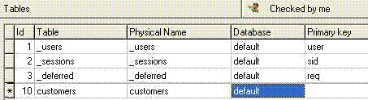
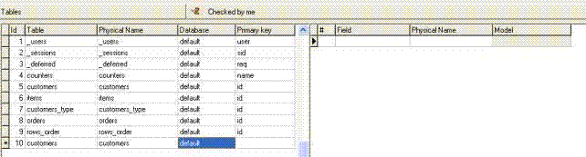
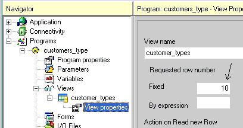
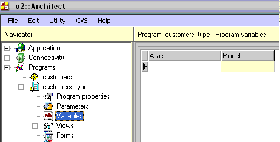
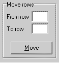
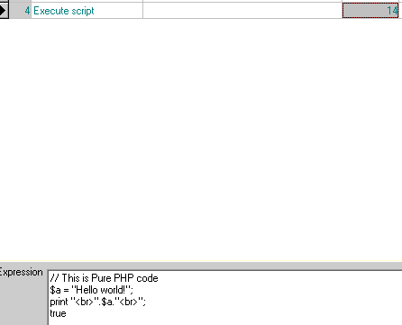

Il corso “Fondamenti della programmazione con o2Architecture” ha
l’obiettivo di fornire al programmatore i concetti base della programmazione
in ambiente o2Architecture e tutto il necessario per iniziare a programmare
con l'interfaccia di sviluppo o2Architect.
Obiettivi
Conoscere i principi fondamentali di o2Architecture e come ottenerne il
miglior risultato
Capire la filosofia di o2Architecture.
Comprendere a fondo gli standard di o2Architecture.
Creare un’ applicazione con o2Architect che:
Ha una completa interfaccia GUI.
Lavora con database SQL.
Espone relazione tra tabelle di tipo uno-a-uno e
uno-a-molti.
Produce dei report.
Lavora su Web ed è compatibile con tutti i browser.
0.1.1Struttura del corso
Questo corso si sviluppa in 3 giornate e intende insegnare i concetti base e
la tecnica di programmazione in o2Architecture.
L’obiettivo principale è abilitare il programmatore a produrre una semplice
applicazione o2. Una volta terminato il corso, il programmatore avrà realizzato
un’applicazione pensata specificatamente per il corso. Durante questo processo
di scrittura il programmatore impara come o2Runtime lavora e come
programmare con o2Architect.
0.1.2Prerequisiti fondamentali per seguire il corso
Prima di proseguire sei pregato di verificare di avere i seguenti requisiti.
Ambiente
Minima conoscenza inglese tecnico
Conoscenza delle operazione base sui sistemi operativi Win2000/XP
Navigare utilizzando Explorer / Risorse del computer
Cercare file e directory
Copiare, muovere ed eliminare file
Aprire e muoversi in un file di testo
Usare e configurare le stampanti
Usare il mouse
Installare e disinstallare applicazioni
Un computer con sistema operativo Win2000/XP su cui installare
l’applicazione
Programmazione
Saper lavorare con i flow charts
Saper risolvere problemi logici con i flow charts
Sapere cos’è una procedura
Sapere cos’è una funzione
Sapere cos’è un evento
Sapere cos’è un ciclo (loop)
Sapere cos’è una condizione "IF - THEN - ELSE"
Sapere cos’è una form
Sapere cos’è un I/O file
Sapere cos’è una variabile
Sapere cos’è un report
Sapere cos’è una view di un recordset
Aver maturato anche una minima esperienza con uno o più tra i comuni
linguaggi di programmazione
Database
Conoscere il significato dei seguenti termini:
Database
Table
Row / Record
Field
Index
Segment
Sapere che relazione esiste tra i suddetti oggetti
Conoscere il significato delle seguenti operazioni:
Creare una tabella
Modificare la struttura di una tabella
Eliminare una tabella
Create un nuovo record in una tabella
Modificare un record in una tabella
Eliminare un record in una tabella
Conoscere il significato dei seguenti termini:
Sort (ordinamento)
Locate (posizionamento)
Range (filtro)
Tecnologia web
Sapere che cos’è un browser web
Saper navigare utilizzando un browser web
Avere una conoscenza anche basilare dei seguenti termini:
Web server
Sito web
Indirizzo URL
HTML
HTML tag
JavaScript
Protocollo TCP/IP
Hyperlink
Alias
0.2o2Runtime - Utilizzare l'applicazione "demo"
Questo modulo introduce il modulo o2Runtime e tutte le utility dell’interfaccia
o2.
Obiettivi
Eseguire una applicazione o2.
Eseguire un programma tramite il menù dell’applicazione.
Saper distinguere un’ interfaccia in modalità screen da una in
modalità line
Navigare sui dati utilizzando i controlli o2 (tabella, combobox, pulsanti,
ecc.)
Utilizzare il menù “root” per amministrare un’installazione
dell’applicazione.
Introduzione
Ci sono due modalità di accesso all’applicazione a runtime:
Da developer (sviluppatore)
Da utente finale
Effettuando in login con il campo “Developer” valorizzato si indica ad
o2runtime che vogliamo attivare anche i servizi di debugging dell’applicazione
e soprattutto si fornisce il nome del programmatore.
Il nome del programmatore viene utilizzato da o2runtime per eseguire i
programmi modificati da parte del programmatore ma non ancora confermati
per tutti.
Questo comportamento è decisamente interessante per testare le modifiche
in un ambiente di sviluppo in team sul progetto, e di confermarle solo dopo averle
verificate.
Premere il pulsante Enter per accedere
0.3"Il mio Negozio online" - L’applicazione di studio
Questo capitolo presenta in dettaglio l’applicazione di studio “Il mio negozio
online” che tu stesso andrai a sviluppare in modo autonomo andando avanti nel
corso.
Il fine dell’applicazione e della sua struttura sarà spiegato in questo
capitolo in modo che sia chiaro al programmatore il significato delle tabelle e
delle funzioni che l’applicazione dovrà avere: devi sempre sapere cosa dovrà fare
la tua applicazione prima di iniziare a svilupparla!
0.3.1Descrizione dell’applicazione
L’applicazione consiste in un sistema per la gestione elettronica degli
ordini dei propri clienti.
"Il mio negozio online" - Diagramma relazione tra tabelle
0.3.2Funzionalità
Lo scopo dell’applicazione sta nel memorizzare e manutenere tutte le
informazioni relative ai clienti, ai prodotti e agli ordini.
L’utente dovrà essere in grado di aggiungere, modificare o eliminare le
informazioni dalle tabelle: “Customers”, “Customers_type”, “Items”, “Orders”,
“Rows_order”.
Inoltre l’utente dovrà essere in grado di stampare una conferma d’ordine
e di produrre un report mensile dei quantitativi totali ordinati per
cliente/articolo.
0.4o2architect - paradigma di sviluppo
Introduzione
Questo modulo pone le basi per lo sviluppo di applicazioni in o2Architect.
Obiettivi
Al termine di questo modulo sarai in grado di:
Spiegare le 4 fasi del processo di sviluppo di una applicazione
Descrivere la relazione esistente tra modelli, tabelle, programmi, e
menu.
Spiegare il sistema gerarchico degli oggetti che compongono
l’applicazione
0.4.1Le 4 fasi per scrivere un’applicazione o2
Ogni applicazione o2 è tipicamente formata da 4 fasi:
Models - Definizione dei tipi dato dell’applicazione per
l’utilizzo in tabelle e programmi
Tables – Definizione di tabelle di database ove l’applicazione memorizzerà
i dati
Programs – Creare la logica per l’interazione tra l’utente finale e le tabelle
del database (le funzionalità dell’applicazione)
Menus – Creare i menu che abilitano l’utente finale ad utilizzare i programmi
dell’applicazione
E’ altamente raccomandato lavorare rispettando queste fasi quando si
sviluppa una applicazione con o2Architect.
Il diagramma a piramide è molto importante per capire le fasi dello sviluppo
dell’applicazione. Capire il diagramma renderà più semplice scrivere
l’applicazione.
Ogni fase della stesura dell’applicazione è locicamente collegata alla fase
successiva.
Il risultato di ogni fase viene memorizzato in un repository (contenitore) -
un model repository, un table repository, un program
repository, e un menu repository.
0.4.1.1Definire i models - datatypes
Un modello è un insieme di proprietà per un certo campo (field)
Ogni volta che si decide di realizzare un’applicazione o2 si inizia con la
definizione di questi modelli. E’ molto meglio definire da subito i modelli con
dei nomi significativi per poi trovarsi bene successivamente.
Proprietà di un Data-type
Ogni oggetto dell’applicazione ha delle proprietà. Un modello data-type è
composto da un insieme di proprietà che vengono ereditate dagli oggetti di più
alto livello nella piramide dell’applicazione (tables, programs...).
Id
Type ("Alpha", "Number", "Logical", ecc.)
Mask (Maschera di presentazione del dato)
0.4.1.2Definire le tables
La seconda fase dello sviluppo di una applicazione consiste nel definire
le tabelle per l’applicazione. Le colonne di ogni tabella ereditano il loro
contenuto dai modelli che il programmatore ha definito precedentemente
nel model repository.
Una tabella è un set di record che hanno la stessa struttura sotto lo
stesso nome.
Un indice è un criterio di ordinamento dei dati di una tabella.
Una tabella può avere uno o più indici e gli indici devono essere tutti
univoci.
0.4.1.3Creare i programs
La terza fase consiste nella creazione dei programmi che eseguano la
logica dell’applicazione e fungano da interfaccia tra l’utente finale e le tabelle
del database.
I programmi sono gli strumenti con cui l’utente finale può manipolare i dati.
E’ il programmatore che decide quali dati e che tipo di manipolazione su essi
sia necessaria.
In o2architecture non esiste una differenza netta tra programmi
online, cioè programmi con un’interfaccia utente, e programmi
cosiddetti batch, cioè procedure con un predefinito flow esecutivo
e nessuna interfaccia interattiva.
Infatti un singolo programma in o2architect può mutare aspetto a seconda
delle situazioni senza che il programmatore debba definirlo in differenti
modi.
0.4.1.4Creare i menus
I menu sono lo strumento principale che permette all’utente finale di
navigare all’interno dell’applicazione.
Il programmatore specifica i menù e le relative proprietà per
l’applicazione.
Il quarto ed ultimo step consiste nell’associare i programmi alle voci
dei menù in modo da permettere all’utente finale di navigare attraverso
l’applicazione.
0.4.2Il meccanismo della ereditarietà
Il diagramma a piramide mostra anche il meccanismo di ereditarietà che
esiste tra i repository dei modelli, delle tabelle, e dei programmi:
Gli oggetti nelle tabelle e nei programmi ereditano le proprietà definite
nei modelli su cui sono basati.
Tale meccanismo offre i seguenti benefici al programmatore:
Riduzione dei tempi di sviluppo dell’applicazione. Una volta creato un modello,
il programmatore non deve ogni volta definire le proprietà sugli oggetti del
suo tipo.
Manutenzione dell’applicazione semplificata. Una volta associati gli oggetti ai
loro modelli, ogni modifica alle proprietà dei modelli è automaticamente
ereditata dagli oggetti associati.
Esempio:
Definendo un modello per il campo "codice_cliente" come alfanumerico
lungo 5 caratteri, lo si può utilizzare come campo di tabella o come di variabile
di programma. Se durante lo sviluppo diventasse necessario variare il modello
e portarlo a 6 caratteri, si dovrà solamente variare il modello e il meccanismo di
ereditarietà garantirà che tali modifiche abbiano effetto su tutti gli oggetti
dell’applicazione basati su tale modello.
0.5Il repository dei datatypes
Questo modulo spiega come si opera all’interno del repository dei datatypes
Obiettivi
Al termine di questo capitolo il programmatore sarà in grado di:
Definire un nuovo datatype nel repository
Definire l’attributo del campo
Define la formattazione (mask) del campo
Introduzione
E’ arrivato il momento di iniziare a sviluppare la tua applicazione "Il mio negozio online”.
Come abbiamo visto nei precedenti moduli, ci sono 4 frasi nella definizione di una applicazione:
nel rispetto di quello che è stato dichiarato il percorso corretto di sviluppo dell’applicazione,
analizzeremo in questo capitolo i modelli di dato di cui avremo bisogno nel corso dell’applicazione.
0.5.1Creare un nuovo progetto in o2Architect
0.5.2Definire un modello di dato nel models repository
Selezioniamo models - datatypes dal navigator menu, e apriamo
quindi il repository dei modelli.
Dopo aver preso l’oggetto in check-out (team development) sarà possibile
aggiungere nuove voci all’elenco base procedendo come descritto sotto:
premere il tasto funzione F4 (create line) o posizionarsi
sull’ultima riga della tabella e premere FrecciaGiù
digitare il nome del modello nella colonna Id
selezionare la tipologia tramite il tasto funzione F5 (zoom)
dalla colonna type
indicare la formattazione del campo dalla colonna Mask; di seguito
alcuni esempi di utilizzo di mask:
Tipo
Mask
Significato
ALPHA
C50
Campo alfanumerico lungo 50 che
accetta sia maiuscole che minuscole
ALPHA
U30
Campo alfanumerico lungo 30 che
trasforma sempre il dato inserito in caratteri maiuscoli
ALPHA
L30
Campo alfanumerico lungo 30 che
trasforma sempre il dato inserito in caratteri minuscoli
NUMBER
6
Intero lungo 6
NUMBER
$ 8.2
Valore numerico composto da
indicazione valuta, 8 interi e 2 decimali separati da punto
LOGICAL
Valore booleano (true/false):
non ha mask
DATE
-
Esprime le date nella forma
dd-mm-yyyy
DATE
/
Esprime le date nella forma
dd/mm/yyyy
ALPHA
U1[Si|No|Forse]
Campo alfanumerico
lungo 1 carattere maiuscolo che può assumere solo 3 valori: S, N, F.
Le descrizioni estese esposte tra parentesi verranno automaticamente
visualizzate all’interno del controllo combobox/listbox
TIME
:
Esprime i time nella forma
hh:mm:ss
per eliminare una voce dall’elenco utilizzare il tasto funzione F3
(delete line) dopo essersi posizionato sulla riga da eliminare.
0.5.3Repository completo di tutti i modelli necessari alla realizzazione del progetto
0.6Il repository delle tabelle
Questo capitolo espone la definizione e l’uso del repository delle tabelle.
Obiettivi
Al termine di questo capitolo il programmatore sarà in grado di:
Definire tabelle nel table repository.
Definire colonne nella tabella utilizzando i modelli.
Definire indici nella tabella.
Introduzione
Questo capitolo passa oltre la prima fase dello sviluppo dell’applicazione (definizione dei
modelli), illustrando la definizione delle tabelle nel table repository.
Per definire una Tabella nel repository devi specificare i seguenti parametri:
Nome logico della tabella
Nome fisico della tabella nel database
Nome del database in cui la tabella è contenuta
Campi della tabella (columns)
Indici della tabella (indexes)
Segmenti di ogni indice
Indice principale della tabella (primary key)
In riferimento al diagramma del database relativo all’applicazione “Il mio negozio online” precedentemente visto, il programmatore al termine di questo modulo avrà creato tutte le
tabelle richieste dall’applicazione.
0.6.1Definizione delle tabelle nel repository
Il repository delle tabelle consiste in una lista di definizioni di tabella.
La definizione di una tabella in o2architect è molto simile a quella nel database,
ma non necessariamente identica.
Il table repository in o2architect è usato per definire la struttura delle tabelle,
e non per crearle nel database. Sarà o2runtime, nel momento in cui un programma viene eseguito
ed utilizza tabelle che non esistono ancora nel database, in base alla struttura definita, a creare la
tabella nel database.
Ogni tabella è definita in modo completo per le sue colonne, per i suoi indici, e per tutte le proprietà
della tabella stessa (nome, database, indice primario).
Checkout dell’oggetto tables (F11)
Creare una nuova riga nel table repository (F4).
Digitare il nome logico della tabella nella colonna Table (stringa senza spazi)
Digitare il nome fisico della tabella nella colonna Physical name (stringa senza spazi)
Nella colonna Database premere F5 (zoom) e selezionare il
database dal repository dei database
Questa è la situazione in cui ti dovrai trovare prima di accedere alla definzione delle colonne:

0.6.2Definizione dei campi della tabella
Adesso dobbiamo definire i campi della tabella accedendo all’area destra del repository:

Creare una nuova riga del columns repository (F4).
Digitare il nome del campo nella colonna Field (stringa senza spazi).
Digitare il nome del campo nel database nella colonna Physical name (stringa
senza spazi).
F5 (zoom) e selezionare il modello dalla colonna Model.
Ripetere queste operazioni per tutti i campi della tabella.
A lavoro completato il columns repository per la tabella "Customers" dovrebbe
presentarsi così:
0.6.3Definizione degli indici della tabella
Gli indici sono chiavi che il programmatore dichiara per definire i possibili ordinamenti dei
record all’interno della tabella, in modo da presentare i valori secondo un certo orinamento e
per favorire le ricerche su tabelle con molti record.
Definire gli indici come univoci (unique), rende più affidabile l’integrità dei dati. In o2architect
ogni tabella deve avere almeno un indice e tutti gli indici dichiarati devono essere univoci. Questo
è facilmente ottenibile aggiungendo i segmenti della chiave primaria anche agli indici che per
definizione non sarebbero univoci.
Vantaggi nell’uso degli indici
Ricerche veloci: utilizzando un indice sarà più veloce la ricerca di dati tramite query basata
sui segmenti dell’indice.
Ordinamento dei dati: utilizzare un indice significa altresì ordinare i dati in base ai segmenti
dell’indice, quindi il programmatore tramite l’uso di questi indici potrà riordinare i dati a seconda
delle situazioni che gli si presentano.
Adesso dobbiamo definire gli indici della tabella accedendo all’area sottostante del
repository:
Questo elenco contiene le informazione di tutti gli indici della tabella selezionata.
Nella parte sinistra la lista degli indici contenente il nome fisico dell’indice. Nella parte destra
invece abbiamo i segmenti dell’indice selezionato, quindi i campi della tabella che determinano
l’ordinamento.
Per creare un nuovo indice per la tabella seleziona procedere come segue:
Creare una nuova riga (F4).
Digitare il nome dell’indice (stringa senza spazi).
Accedere all’area destra (segments).
Creare una nuova riga (F4).
F5 (zoom) per selezionare il campo della tabella dalla colonna
Index segment.
Definire il tipo di ordinamento (Ascending o Descending).
Ripetere i punti 4-5-6 per tutti i segmenti dell’indice selezionato
0.6.4Utility per la conversione delle tabelle
Qualora il programmatore modifichi la struttura di una tabella, sia aggiungendo campi o indici,
che modificando la tipologia dei campi o i segmenti di un indice, potrebbe essere necessario un
intervento anche alla struttura della tabella fisica nel database (se la tabella è già stata creata).
Accedendo all’applicazione a runtime come utente "root" (amministratore di runtime) si avrà
disponibile il menu "Administrator": tramite la pressione del tasto dx del mmouse al centro della finestra del browser; scegliendo la voce di menu "tables" si avvia una utility di manutenzione delle
tabelle.
0.6.4.1Controllo (check) di tutte le tabelle
Al fine di verificare che la struttura delle tabelle definita in o2architect sia compatibile con
la struttura fisica nel database, procedere premendo il pulsante Check all tables.
Dopo l’analisi comparirà l’esito nell’area di log:
La procedura avverte il programmatore che la tabella "items" presenta colonne nuove in
o2architect che non esistono fisicamente nel database.
Adesso sarà opportuno procedere con la verifica ed il rebuild della singola tabella "items".
0.6.4.2Controllo (check) e Rebuild della singola tabella
Una volta verificato che alcune tabelle presentano delle differenze tra la definizione o2 e
la definizione fisica nel database è necessario procedere con il check della singola tabella e il successivo rebuild.
Selezionare la tabella da analizzare tramite il listbox in alto a sinistra;
nel log comparirà il risultato del check della singola tabella selezionata.
Al termine dell’analisi o2runtime produce l’elenco delle differenze come segue:
Per riallineare la struttura fisica della tabella procedere premendo il pulsante
Rebuild table structure.
0.6.4.3Azioni disponibili sulla tabella
A seguito dell’analisi prodotta da o2runtime circa la compatibilità tra la
struttura delle tabelle definita in o2architect e quella definita fisicamente nel
database in uso, il programmatore ha tutti gli strumenti per decidere quale
azione compiere.
Browse della tabella
Create della tabella
Import data della tabella
Export data della tabella
Drop della tabella
Rebuild della tabella
Logging della tabella
Browse della tabella
Semplice interfaccia per la modifica dei dati dell tabella
Create della tabella
E' abilitato solo se la tabella non esiste ed esegue lo statement SQL oppurtuno per la sua creazione
Import data della tabella
Utility per l'importazione dei dati da file di testo formattato secondo uno schema XML interno: sono importabili file generati tramite la funzione di export
Export della tabella
Utility per l'esportazione dei dati della tabella su file di testo secondo uno schema di formattazione XML interno. Questi files saranno importabili tramite la funzione Import data
Drop della tabella
Il programmatore premendo il pulsante Drop elimina la tabella dal
database. In questo modo un successivo accesso ad una funzione dell’applicazione
da parte dell’utente finale che richieda l’utilizzo di questa tabella provocherà una
creazione automatica della tabella, sulla base della struttura definita in 2architect.
E’ evidente che così facendo le eventuali differenze sparirebbero, però utilizzare
questa opzione con cautela e solamente se non esistono record nella tabella, oppure
se ritenete che i dati in essa contenuti non siano importanti.
Rebuild della tabella
Premendo il pulsante Rebuild o2runtime modifica la struttura fisica della
tabella, rendendola compatibile con quella o2 e mantenendo integri i dati in essa
contenuti.
Logging dei record della tabella
Il sistema permette di attivare a Runtime il log di tutte le modifiche sulla tabella. Attivando il log su una tabella viene creata una tabella identica all'originale con in più i campi Date - Time - Microtime - Action - User, ed ad ogni inserimento, modifica, cancellazione o2Runtime aggiornerà il log in modo automatico.
Esercitazione
Riepilogo
Questo capitolo ha conferito al programmatore gli strumenti necessari per completare
la seconda fase dello sviluppo di un’applicazione o2: definire tabelle nel tables repository
.
Il tables repository elenca tutte le tabelle dell’applicazione, i rispettivi campi e i
rispettivi indici.
E’ importante dare un nome significativo alle tabelle e ai campi anche in contraddizione
con il nome fisico dell’oggetto.
Dopo aver definito i campi procedere con la definizione degli indici.
Definire indici permette rapide ricerche di dati e il riordino degli stessi.
Un indice deve avere uno o più segmenti.
Dopo aver definito gli indici indicare quale è indice primario per la tabella.
0.7Un programma di interazione con i dati di una tabella
Questo capitolo mostra come creare un semplice programma di browsing su una
tabella.
Obiettivi
Al termine di questo capitolo il programmatore sarà in grado di:
Creare un programma di browsing
Navigare all’interno della definizione di una view
Impostare la tabella principale (main table) di una view
Definire i campi richiesti
Disegnare un’interfaccia di base per navigare sui dati
Controllare la sintassi del programma ed eseguirlo
Introduzione
Arrivati a questo punto abbiamo definito i modelli e le tabelle per l’applicazione.
In questo capitolo andremo a creare un semplice programma di browsing,
nel caso specifico un programma per la consultazione, la modifica e l’inserimento dei dati
nella tabella "Customers_type" e lo faremo ponendo l’attenzione soprattutto su come il
programma è suddiviso, tralasciando per il momento alcuni dettagli che saranno approfonditi
nei successivi capitoli.
Il processo si divide in quattro fasi:
Definizione della view (vista sul database)
Definizione delle operazioni per l’esecuzione delle azioni di insert, delete, update
Creazione della Form (interfaccia)
Inserimento del programma a menu
0.7.1I programmi
Per creare un nuovo programma, selezionare Programs dal menu
Navigator.
Posizionarsi su Programs e premere F4
Digitare il nome del programma (stringa senza spazi) e confermare
Per selezionare un programma, sia quello appena creato che qualsiasi altro già
presente nel repository dei programmi:
Esplodere il menu Programs dal Navigator
Selezionare il programma da modificare
Premere INVIO
Come si può vedere il programma è suddiviso logicamente in 9 aree:
Program properties
Parameters
Variables
Views
Forms
I/O Files
Protocols
Actions
Expressions
Ogni area a sua volta potrà contenere altre sottoaree che analizzeremo
approfonditamente andando avanti nel corso. In questa fase ci limiteremo a creare lo
stretto necessario per raggiungere il nostro obiettivo:
creare un semplice programma di interfaccia con una singola tabella, i
"Customer_types".
0.7.2Le view
Per creare una nuova view:
Selezionare l’area View dal Navigator e premere F4
Digitare il nome della view (stringa senza spazi) e confermare
Per accedere ad una view, sia a quella appena creata che ad eventuali altre view del
programma, esplodere la voce View dal Navigator e dopo aver selezionato la
view interessata premere INVIO per accedere alla sua definizione.
Tabelle della view
Dopo aver creato una nuova view andiamo nell’area Tables in view per dichiarare
quali tabelle prenderanno parte nella query.
Nel caso specifico aggiungiamo un’unica tabella ("Customer_types") e la dichiariamo
Main table della view.
In questo momento il programmatore non si preoccupi più del dovuto se non
comprende il significato delle altre voci all’interno del repository, saranno abbondantemente
riprese nei successivi capitoli.
Campi select e campi calculated
Una volta dichiarato la tabella principale della view possiamo accedere nell’area sottostante
Select and calculated fields per definire quali campi della tabella vogliamo utilizzare
all’interno di questo programma.
Per aggiungere un nuova riga a questa lista procedere come segue per tutti i campi da
selezionare:
Creare una nuova riga F4
F5 (zoom) dalla colonna Type e selezionare il tipo
"Select"
F5 (zoom) dalla colonna From table e selezionare
"Customer_types"
F5 (zoom) dalla colonna Field e selezionare il campo della
tabella
Confermare la riga (FrecciaGiù) in modo da attribuire il valore alla colonna
Alias
Ripetere i punti 2-3-4-5 per tutti i campi della tabella, ottenendo un elenco come
questo:
Proprietà della view
Ogni view ha un’area, dove definire eventuali proprietà avanzate, a cui si accede
selezionando dal Navigator l’elemento View Properties sotto la view
interessata.
Nel nostro caso dobbiamo modificare la proprietà Number of requested
records ed impostarla ad "1".
Questa proprietà identifica il numero di record che saranno richiesti di volta in volta
al server di database e, nel caso di interfacce di tipo screen, dove viene
letto un record alla volta, deve essere impostato ad "1" (default = "10").
Questi argomenti saranno trattati a fondo nei capitoli successivi

0.7.3Definizione di azioni e operazioni di modifica dei dati
Le action (azioni) sono in sostanza tutta la componente esecutiva di un programma
o2.
Ogni action è composta da una serie di operations (operazioni) che vengono eseguite
da o2runtime nell’ordine in cui sono state definite.
In questo momento il programmatore non si preoccupi più del dovuto se non
comprende il significato delle altre voci all’interno del repository: saranno
abbondantemente riprese nei successivi capitoli.
Per creare una nuova action:
Selezionare l’area Actions dal Navigator e premere INVIO
Digitare il nome della action (stringa senza spazi) e confermare
Per accedere ad una action, sia a quella appena creata che ad eventuali altre action
del programma, esplodere la voce Actions dal Navigator e, dopo aver
selezionato la action interessata, premere INVIO per accedere alla sua
definizione.
Per creare una nuova operazione:
Creare una nuova riga nella tabella Operations (F4)
Selezionare dal combobox l’operatore opportuno (nel nostro caso Recordset)
F5 (zoom) dalla colonna Object per aprire l'interfaccia di
definizione specifica per l’operatore scelto Nel nostro caso, visto che stiamo definendo l’azione "new_customer_type" sceglieremo
l’opzione "Prepare insert" (prepara il recordset per l’inserimento di un nuovo record)
Conferma della riga (FrecciaGiù)
Esercitazione
0.7.4Creazione della form (interfaccia utente)
In questa fase andremo a creare la rappresentazione visuale del programma generato
nelle fasi precedenti.
Per fare questo, il programmatore genererà una form in o2architect che produrrà
l’interfaccia per l’utente finale.
In questo momento il programmatore non si preoccupi più del dovuto se
non comprende il significato delle altre voci all’interno del repository, saranno
abbondantemente riprese nei successivi capitoli.
Per creare una nuova form:
Selezionare l’area Forms dal Navigator e premere INVIO
Accedere alla tabella delle form
Creare una nuova riga F4
Digitare il titolo nella colonna Title
Premere il pulsante Design per accedere all’editor visuale delle form
Il programmatore si trova di fronte una finestra denominata Design form che
rappresenta lo spazio totale disponibile (la finestra del browser).
Al suo interno:
la form "Customer_types" che sarà la form del nostro programma
la palette dei controlli o2
l’Object inspector strumento con il quale si attribuiscono le proprietà ai
controlli
Il programma che stiamo facendo deve consentire la completa manutenzione della tabella
"Customer_types", per cui devono essere definiti i controlli che accolgano i valori dei campi della
tabella. Scegliamo dei semplici controlli Edit text.
Aggiungere controlli ad una form
Per procedere con l’inserimento dei controlli sulla form procedere come
segue:
Selezionare il controllo dalla palette (nel nostro caso il controllo Edit)
Posizionare il controllo sulla form "Customer_types" semplicemente cliccando
sul punto voluto
Utilizzare adesso l’Object inspector per definire la proprietà Field
(campo associato al controllo) e selezionare il campo “id” dalla view
“customer_types”
Ripetere i punti 1-2-3 anche per il campo “description” in modo da ottenere
questo risultato:
Aggiungere un controllo di navigazione sulla vista (DBNavigator)
Procediamo adesso inserendo sulla form un oggetto di tipo DBNavigator
.
Questo controllo fornisce all’utente finale la capacità di muoversi all’interno
del recodset semplicemente cliccando sui bottoni (First row –Previous
page – Previous row – Next row - Next page - Last
row)
Proprietà obbligatoria: la View. Impostiamo la proprietà View
del DBNavigator selezionando la view “customer_types”
Aggiungere dei pulsanti di comando
Per scatenare le azioni sul recordset che abbiamo definito nella precedente fase
dobbiamo inserire sulla form 3 controlli di tipo Button.
Dopo aver posizionato l’oggetto Button sul form “Customer types” procedere
con la definizione delle proprietà al momento indispensabili:
Caption
Action
La proprietà Caption contiene il testo che comparirà sul pulsante; la proprietà
action, invece, il nome dell’azione che sarà invocata al click sul pulsante.
Esempio: attribuzione delle proprietà Caption e Action al pulsante
“Elimina”
Ripetere l’operazione per gli altri due pulsanti: “Nuovo” e “Salva” in modo da ottenere
il seguente risultato:
Salvataggio del programma e pubblicazione
Adesso il programma è terminato: dobbiamo salvarlo e pubblicarlo prima che sia
possibile inserirlo in un menu.
Salvataggio modifiche dal Design form
Uscire dal Design form tramite il pulsante di chiusura del form e alla richiesta di salvataggio confermare.
Pubblicazione del programma
Dal menu CVS scegliere la voce Check-in (F12).
0.8Select, calculated, criteri di range e variabili
Questo capitolo approfondisce le conoscenze del programmatore
circa la costruzione delle view che è stata solamente accennata nei
precedenti capitoli.
Obiettivi
Al termine di questo capitolo il programmatore sarà in grado di:
Definire le tabelle implicate nella query
Creare campi calcolati attribuendo expression di valorizzazione
Filtrare il recordset in base ai parametri di range
Utilizzare le funzioni di aggregazione (SUM, MAX,
MIN, AVG)
Utilizzare gli eventi della view
Introduzione
La creazione di una view in o2architect ha come unico scopo
quello di definire un dataview con il quale il programma
(tramite le action) o l’utente finale (tramite le form) potranno
interagire per raggiungere l’obiettivo funzionale.
Ogni programma o2 può contenere una o più view.
Ogni view può essere composta da campi di tabelle diverse e
residenti su database anche fra loro eterogenei.
Per affrontare in modo efficace gli argomenti di questo capitolo ci
poniamo come obiettivo quello di realizzare un programma di
consultazione e ricerca dei clienti, definendo un’ interfaccia di tipo
line e una serie di campi che l’utente potrà utilizzare per
ricercare alcuni valori all’interno della view.
0.8.1Tables in view
Creiamo un nuovo programma denominato “customers” e al suo interno
una view denominata appunto “customers”.
Definiamo adesso le tabelle delle view.
Nell'area della view indicata come Tables in view vengono dichiarate
le tabelle necessarie per la costruzione della query.
Nel nostro caso dobbiamo costruire una query che riporti i valori dalla
tabella “customers”, quindi dobbiamo aggiungere la tabella “customers” e
dichiararla Main table della view.
Ogni view o2 richiede sempre una e solo una tabella
dichiarata come Main table o come View. (Per quanto
riguarda il level View tratteremo l'argomento più avanti nel corso).
Le altre tabelle che eventualmente servano alla definizione della view
devono obbligatoriamente essere dichiarate di level Link.
Le link consentono di estendere il recordset nel numero di colonne,
agganciando al recordset principale anche le select derivanti da altre tabelle,
ma non estendono mai il recordset nel numero di record ritornati. Possono
tuttavia ridurlo se applicati dei criteri di range.
Vedremo meglio le link più avanti nel corso.
Aggiungiamo al corpo della view le select necessarie (tutte) in modo da
ottenere il seguente risultato:
0.8.2I campi calcolati (calculated)
Supponiamo di voler definire una colonna nel recordset contenente
la concatenazione di stringa dei campi che compongono l’indirizzo, per
visualizzarli come fossero un unico campo sul database.
Aggiungere alle nostre select una nuova riga (F4)
F5 (zoom) dalla colonna Type e scegliamo
Calculated
Digitare il nome del campo nella colonna Alias (stringa senza spazi
e di contenuto univoco all’interno della view)
F5 (zoom) dalla colonna Init per selezionare
l’espressione di calcolo (dal repository delle expression)
0.8.3Le espressioni (expression)
E’ doveroso, arrivati a questo punto del corso, prima di proseguire,
esprimere per la prima volta il concetto di expression del programma.
All’interno di ogni programma è possibile definire infinite espressioni
(simili alle funzioni di qualsiasi linguaggio di programmazione). Ogni espressione
è composta da:
Un indice univoco (id) con il quale sarà indicata e utilizzata
Un campo testo (illimitato nel numero di caratteri) denominato Script
(facoltativo)
Un campo testo (limitato a 255 caratteri) denominato Return e che
esprime il valore che l'espressione dovrà ritornare
Il Return di una espressione può essere una costante o il risultato di
espressioni valorizzate nello Script, utilizzando funzioni e i valori delle
variabili del programma. Ovviamente tali valori saranno determinati durante
l’esecuzione del programma dal modulo o2Runtime.
Ecco alcuni esempi di expression:
La prima ritornerà sempre la stringa “Costante alfanumerica”
La seconda ritornerà sempre il valore 100
La terza ritornerà il valore del campo “address” all’interno della view
“customers” del record selezionato in quel momento
Fatta questa premessa dobbiamo creare una nuova expression che riporti la
concatenazione di stringa tra i campi che compongono l’indirizzo del cliente. Per
fare questo:
Dalla scelta Expression creare una nuova riga (F4)
F5 (zoom) dalla colonna Return per accedere
all’area di Script
F5 (zoom) dallo script per accedere agli oggetti o2
disponibili (campi, proprietà dell’applicazione, ecc.)
Scrivere un’espressione come quella sottostante per farsi ritornare il valore
dei campi "address" e "city" concatenati
Attenzione. Lo Script e il Return delle espressioni
o2 deve essere sintassi PHP (per informazioni sul linguaggio
PHP visitare il sito www.php.net). Questo significa che all’interno delle espressioni o2 possono essere utilizzate liberamente
le funzioni che il linguaggio PHP mette a disposizione.
Dopo la definizione della suddetta expression la nostra view si presenterà nel
seguente formato:
Il riferimento “1” nella colonna Init richiama l’expression con id “1”
appena creata.
0.8.4Criteri di range (Min, Max, Not, Like)
Il programmatore può definire una espressione per ogni criterio di range
su ognuno dei campi selezionati all’interno della view al fine di filtrare il
recordset.
Le espressioni di range nelle colonne di Range sono l’unico modo
per definire i criteri di filtro all’interno del dataview completo. Le colonne di
Range sono quattro:
Min - valore minimo accettato per il campo
Max - valore massimo accettato campo
Not - valore che NON deve essere accettato per il campo
Like - valori che deve essere contenuto nel campo
Ogni riga di select all’interno della View permette l’inserimento nelle celle
Min, Max, Not e Like, posizionandosi sulla riga,
quindi sul campo, che vogliamo filtrare e premendo F5
(zoom) dalla colonna Min per selezionare l’espressione di filtro.
Se, a titolo di esempio, volessimo che il nostro programma lavorasse solamente
con clienti che abbiano un codice ("id") compreso tra il valore "10" e il valore "30"
dovremmo:
F5 (zoom) dalla colonna Min della riga dell’"id"
Creare una nuova expression (F4)
Digitare "10" nella colonna Result e selezionare l’expression
Spostarsi nella colonna Max
F5 (zoom) dalla colonna Max della riga dell’"id"
Creare una nuova expression (F4)
Digitare "30" nella colonna Result e selezionare l’expression
0.8.5Variabili del programma
Appare evidente che i filtri visti fino ad ora risolvano solo una parte del
problema, cioé quella dei filtri definiti dal programmatore. In molti casi, però,
il programmatore non può definire a priori i valori di range, ma può definire dei
criteri utilizzando le variabili del programma (variables) che, in fase
esecutiva, assumeranno dei valori (sia impostati dall’utente finale che dalle
action stesse del programma).
Ecco un esempio del risultato da ottenere:
Oltre ai campi delle view, il programmatore può definire, all’interno di ogni
programma, tutte le variabili locali che ritiene necessarie. Queste variabili sono
utilizzabili solo all’interno del programma in cui vengono definite.
Dal Navigator selezionare Variables

Per definire una nuova variabile:
Accedere alla tabella e creare una nuova riga (F4)
Digitare il nome nella colonna Alias
F5 (zoom) dalla colonna Model per selezionare
il modello
Procedere adesso autonomamente a definire le variabili che metteremo a
disposizione dell’utente finale per la ricerca dei clienti, ad esempio:
Una volta definito le variabili procedere con la creazione delle espressioni da
utilizzare nelle colonne di range della view. Al termine, la nostra view su "customers"
si presenterà nel seguente modo:
E questo sarà l’elenco delle expression:
0.8.6Creazione della form (di tipo line)
Creiamo adesso l’interfaccia utente. Come già precedentemente visto,
accedere all’area Forms dal Navigator.
Creare una nuova riga nella tabella delle form (F4)
Digitare il titolo nella colonna Title
Premere il pulsante Design per accedere all'interfaccia di
Design form
Posizionare i controlli sulla form, in particolare utilizzare il controllo
(Table control) per impostare i record
in forma tabellare. Inserendo il controllo table la procedura richiederà
a quale view associarlo (proprietà obbligatoria).
Il controllo table è un controllo in grado di contenere altri controlli,
quindi aggiungere i controlli edit all’interno della tabella e associarli ai
rispettivi campi della view.
Porre attenzione ai campi all’interno del controllo table. Oltre alla
proprietà Field è necessario impostare anche la proprietà Parent
Options che in questo caso raccoglie le proprietà della colonna della tabella.
Per ogni campo all’interno della tabella è necessario definire, attraverso la
proprietà Parent options:
La riga in cui verrà visualizzato (Line)
Da quale colonna a quale colonna (From column – To column)
L’intestazione di colonna (Label)
Gli altri campi sono facoltativi e saranno trattati nei capitoli successivi.
0.9Relazione uno-a-uno - le link
Questo capitolo introduce il programmatore all’uso delle tabelle di Link
level, che consentono la creazione di una connessione uno-a-uno
tra tabelle di database.
Obiettivi
Al termine di questo capitolo sarai in grado di:
Capire il funzionamento di view con più tabelle tra loro in relazione semplice
uno-a-uno
Comprendere il meccanismo di ricalcolo dei dati di tabelle di link level
Filtrare una view per un campo di una tabella di link level
0.10I programmi di selezione
Questo capitolo introduce l’utilizzo di programmi di selezione, funzioni che
abilitano l’utente finale a scegliere valori da una lista.
Obiettivi
Al termine di questo capitolo sarai in grado di:
Create una tabella di scelta
Passare e ricevere parametri tra programmi
Capire il concetto di programma di selezione
Posizionarsi su un record della view senza filtrarla (Locate)
Introduzione
Un’esigenza comune a molte procedure è quella far interagire più programmi
(cioè unità funzionali distinte) e di scambiare tra loro informazioni. In questo
capitolo vedremo come invocare l’esecuzione di un programma dall’interno di un
altro e come scambiare parametri tra loro. In particolare vedremo come realizzare
un programma che consenta di selezionare un valore da un elenco e di restituirlo al
programma chiamante, allo scopo di valorizzare un campo a scelta
obbligatoria.
A tale scopo utilizzeremo il programma di consultazione e ricerca dei clienti
come programma di selezione per recuperare un "codice cliente".
0.10.1I parametri in entrata
Ogni programma che voglia ricevere informazioni da altri programmi deve
mettersi nella condizione di accettarle. Ciò viene fatto definendo il numero e il
tipo (data models) di informazioni accettate nell’elenco dei parametri
del programma: tali informazioni resteranno disponibili al programma chiamato
per tutto il tempo della sua esecuzione.
Dal Navigator selezionare Parameters:
Per definire un nuovo parametro:
Accedere alla tabella e creare una nuova riga (F4)
Digitare un numero progressivo di Id per il parametro
Digitare un nome significativo
F5 (zoom) dalla colonna Model per selezionare
il modello
0.10.2Il ritorno dei parametri
Il ritorno dei parametri è implicito: ovvero, dopo la conclusione del programma
chiamato, il chiamante si troverà i parametri passati by reference
(vedremo in dettaglio il significato quando parleremo del programma chiamante)
come valorizzati dal programma chiamato. La valorizzazione dei parametri avviene
tramite l’istruziune di return parameter.
Dall’elenco delle azioni creare una nuova azione di nome "return" che contenga
un’istruzione di return parameter:
Premendo F5 su Arguments accedere alle espressioni e
inserire il riferimento al "Codice cliente" della vista "customers".
Aggiungere un’istruzione di Close program all’azione "return" per
terminare il programma e ritornare l’esecuzione al programma chiamante. In questo
modo, all’esecuzione dell’azione "return", il parametro "Customer_id" verrà
valorizzato con il valore corrente di "Codice cliente", a seconda della selezione
operata dall’utente sull’interfaccia del programma, e il programma di selezione verrà terminato.
Adesso manca solo di dare la possibilità all’utilizzatore di operare la selezione:
Per questo aggiungere un pulsante sulla form a associargli la nostra nuova
azione di "return".
0.10.3Il passaggio di parametri
Creiamo un programma (di nome "caller") che contenga una sola variabile
(di alias "selected_customer") di tipo "customer_id" e che mostri la
variabile ed un pulsante per chiamare un’azione di nome "selection". Per i vari
passaggi rimandiamo ai capitoli precedenti.
A questo punto definiamo la nostra azione "selection" aggiungendo una
chiamata al programma "customer" e passando la nostra variabile
"selected_customer" come parametro.
L’istruzione call program prevede di selezionare il programma da
chiamare e poi, premendo F5 sulla cella Arguments,
presenta l’interfaccia dei parametri in uscita. I parametri possono essere passati
in due modi:
by reference - (Tramite il pulsante Variable) La variabile
o il campo della vista da passare viene selezionato dall’elenco dei campi del
programma. Al termine del programma chiamato il valore del campo potrà
risultare variato.
by expression - (Tramite il pulsante Expression) Il valore
risultante dall’espressione sarà passato e reso disponibile al programma
chiamato come valore ma nessuna azione di ritorno è attesa o possibile.
Nel nostro caso passeremo la variabile "selected_customer" come riferimento
( by reference) per consentire il recupero del valore selezionato.
0.10.4Call program e Goto program
Call program e Goto program servono entrambe per chiamare
un altro programma ma con una sostanziale differenza:
La Call program mette in attesa il programma chiamante (la cui eventuale
interfaccia rimane inattiva sullo sfondo) ed esegue il programma chiamato fino alla
sua conclusione. Al termine del chiamato (che esso preveda o no interazioni con
l’operatore) il programma chiamante riprenderà la propria esecuzione, disponendo
degli eventuali parametri valorizzati (esecuzione modale).
La Goto program passa l’esecuzione ad altro programma (oppure
sposta l’indirizzo web del browser all’url indicato) terminando in maniera
irreversibile l’esecuzione del programma chiamante. Ovviamente l’utilizzo dei
parametri by reference per una Goto program non può avere
alcun intento di recupero valore.
0.10.5L’istruzione di locate
Se, ad esempio, volessimo ottenere questo effetto: quando il campo
"selected_customer" del programma chiamante ha già un valore, posizionare
la selezione del programma chiamato sul record che descrive tale valore.
Ovvero: se inseriamo il valore "3" nel campo e premiamo il pulsante di selezione
del "Codice cliente", vogliamo che il programma "customer" si apra mostrando il
record con "id" = "3" come riga corrente.
Questo comportamento lo si ottiene tramite l’istruzione recordset locate:
l’istruzione accetta come parametri i valori di ricerca per ogni campo della tabella
principale e rende corrente il primo record che soddisfi tali valori. Nel caso che nessun
record li soddisfi, la vista si posiziona sul primo record del recordset.
Nota bene che l’istruzione di locate semplicemente posiziona
la vista sul record richiesto, senza operare alcuna variazione né di range né di
ordinamento per il recordset!
Nell’elenco delle azioni creare una nuova azione di nome "locate" e contenente
un’istruzione di recordset locate sulla vista "customers". Nell’elenco delle
espressioni di locate per campo (F5 sulla cella Arguments)
inserire un’espressione in corrispondenza del campo id che contenga il riferimento
al parametro in entrata "1 - Customer_id".
Ma quando eseguire la nostra azione? Abbiamo detto che vogliamo che il
programma si apra già posizionato sul giusto record, quindi vogliamo
che l’azione "locate" sia eseguita ogni volta che chiamiamo il programma
"customers", prima di presentare l’interfaccia all’utente.
Per questo dobbiamo indicare la nostra azione come Initial action del
programma corrente (per i dettagli vedere la sezione relativa agli eventi). Come
condizione di esecuzione della nostra istruzione di locate mettiamo una expression
che risolva in "true" se il parametro arriva valorizzato, cioè diverso da "0". Questo
impedirà l’esecuzione dell’istruzione quando tale condizione non si verifichi, cioè
quando il programma verrà invocato da menu e quindi senza alcun parametro in
entrata.
Riepilogo
In questo capitolo abbiamo creato un programma di selezione di record in
una tabella, che accetti un parametro in entrata e lo valorizzi alla pressione di
un pulsante. Abbiamo poi creato un secondo programma che chiami il primo
passando una propria variabile come parametro e ne riceva il valore ritornato.
In fine abbiamo visto come posizionare la vista uno specifico record, senza variare
i criteri di range e ordinamento per il recordset.
La Call program attende l’esecuzione del programma chiamato, dopo
di che riprende l’esecuzione del chiamante, mentre la Goto program non
prevede ritorno dal programma chiamato.
I parametri in uscita possono essere passati come variabili o come espressioni
per recuperare o meno i valori di ritorno.
I valori dei parametri in entrata sono disponibili al programma come i valori
delle normali variabili e campi delle viste.
L’istruzione di locate accetta un’espressione per ogni campo per il quale
si voglia indicare un criterio di posizionamento.
0.11Relazione uno-a-molti
In questo capitolo apprenderai il concetto di relazione
uno-a-molti
Imparerai a implementare view e form che presentano dati di tabelle fra loro
collegate da una relazione di dipendenza di tipo uno-a-molti.
Obiettivi
Al termine del capitolo sarai in grado di:
Legare due o più view tra di loro tramite le espressioni di range
Definire form con più di un controllo DBNavigator e con più di un
controllo DBTable
Mantenere l’integrità dei dati attraverso le istruzioni di update dei
campi di collegamento in fase di inserimento
0.12Gli eventi
In questo capitolo vedremo i vari eventi disponibili in o2 e come utilizzarli.
Obiettivi
Al completamento di questo capitolo sarai in grado di:
Individuare ogni tipo di evento
Applicare il meccanismo degli eventi alla logica dei programmi
Scegliere gli eventi in base alle necessità
Introduzione
Gli eventi sono tutti quei momenti in cui l’o2runtime può passare il controllo
ad un’azione o ad un programma indicati dal programmatore ed hanno due scopi:
Permettere al programmatore di intervenire all’interno di procedure
automatizzate (come gli eventi di view di Read new row e Leaving
modified row)
Permettere al programmatore di indicare le azioni da eseguire a fronte di
certi comportamenti dell’operatore (come gli eventi di action per i pulsanti)
Gli eventi si dividono in 4 categorie in dipendenza degli oggetti su cui sono
definiti e del tipo di esecuzione che possono invocare.
0.12.1Gli eventi di applicazione
Gli eventi di applicazione servono a controllare momenti esecutivi
indipendenti dal programma chiamato e comuni a tutta l’appliazione e sono
due:
Start program
Lo Start program serve ad indicare il programma da eseguire
all’entrata nell’applicazione, cioè immediatamente dopo la funzione di login
di convalida dell’utente di scrittura della sessione.
Tale programma può essere un programma batch di servizio di ambiente,
utile a vari scopi: impostare variabili di ambiente, impostare i menu di
applicazione, recuperare informazioni dell’utente e scrivere log e statistiche;
oppure può essere un programma con interfaccia che dia al via alle esecuzioni
in assenza di menu, mostri menu personalizzati, mostri e costituisca la
home page del sito, richieda o notifichi informazioni all’utente e
quanto altro si voglia eseguire sempre ed una sola volta ad ogni accesso al
proprio sito.
On request program
L’On request program, invece, deve essere rigorosamente batch
per un logico motivo: la sua esecuzione viene invocata ad ogni
request da parte dell’utente e, quindi, anche durante le normali
interazioni richieste dagli altri programmi.
L’utilizzo di questo evento è da prendersi in considerazione in casi molto
particolari, ad esempio, qualora si vogliano fare controlli sullo stato della
sessione o per risolvere esigenze specifiche di gestione della comunicazione
http.
0.12.2Gli eventi di programma
Ad oggi l’o2 prevede un solo evento di programma e cioè la initial
action.
La initial action è l’azione eseguita automaticamente dal
programma ogni volta che viene chiamato ed è possibile impostarla
dall’omonimo campo nella pagina di Program properties del
programma.
Come abbiamo visto, tramite questo evento è possibile impostare una
vista del programma su specifici valori di ricerca ma risulta molto utile anche
per effettuare controlli e valorizzare variabili all’entrata in un programma con
interfaccia.
Indispensabile l’utilizzo della initial action per i programmi batch:
non mostrando alcuna interfaccia all’utente, tali programmi rimangono in
esecuzione per la durata della loro gerarchia esecutiva, il cui primo passo è
sempre la initial action, in assenza della quale non eseguono
alcuna azione.
0.12.3Gli eventi di view
Agli eventi di view è possibile collegare 2 azioni del programma che
contiene la vista, tramite la pagina di View properties:
Action on read new row
Questa action verrà invocata ogni volta che, ad opera dell’utente o delle
logiche esecutive delle azioni, verrà impostata la selezione del record corrente
per la vista, prima di eseguire qualunque azione scatenata dai controlli e prima
di comporre la form da mostrare all’operatore.
Questo evento risulta particolarmente utile per sincronizzare il contesto
visualizzato con i record selezionati nelle viste e per mostrare decodifiche dei
dati del recordset. Ad esempio, con questo evento, si possono opportunamente
valorizzare variabili locali a fronte di valori letti dal record corrente.
Action on leaving modified row
L’azione qui indicata sarà automaticamente eseguita ogni volta che si tenterà
di impostare la selezione per la vista, abbandonando un record modificato e non
scritto su database.
Questo evento è pensato per automatizzare le procedure di salvataggio delle
modifiche: inserendo un’azione che esegua un’istruzione di record postrow,
si otterrà l’effetto di salvare le modifiche apportate dall’operatore, senza che egli
lo richieda, ad ogni tentativo di cambio del record corrente.
Un altro utilizzo può essere quello di assicurare ad una vista la corretta forma
dei dati da salvare, prima di scriverli su database, indipendentemente dalle azioni
che ne provocheranno le modifiche.
0.12.4Gli eventi di interfaccia
Gli eventi di interfaccia sono di numero e di forma più varia e servono ad
indicare le azioni di programma da eseguire a fronte delle varie funzionalità
offerte dai controlli di interazione con l’utente.
Il controllo window
Prevede un solo evento di Close click action, la cui azione viene
indicata nella pagina di proprietà della form:
L’azione qui indicata verrà eseguita quando l’operatore clicca sulla crocetta
di chiusura della finestra e può essere utile per eseguire azioni all’uscita dal
programma o per impostare criteri di visibilità per le finestre.
I controlli associati a campi (Edit control, List/combo box,
Check box, Text area e Multi page)
Implementano tutti un evento di on change, controllabile tramite 2
proprietà della finestra Object inspector, presente durante la sessione
di editing della form.
La proprietà Action indica l’azione da eseguire a fronte di una
modifica al valore del controllo: l’azione verrà eseguita al prossimo ritorno al
server.
La proprietà Submit on change permette di indicare un’espressione
che, se valutata a "true", forza il ritorno al server quando si abbandoni il controllo
dopo averlo modificato. Il comportamento, guidato da un javascript,
è lo stesso che se l’operatore premesse un pulsante di submit ogni
qualvolta abbia apportato modifiche al controllo: questo permette di aggiornare le
viste e di eseguire l’azione indicata nella proprietà Action del controllo ad
ogni modifica del valore.
L’uso delle due proprietà permette di utilizzare gli eventi di on change
dei controlli associati a campi, in modo da far reagire in maniera dinamiche e
tempestiva il contesto del programma alle eventuali variazioni di valore dei campi
e delle variabili che si utilizzano: particolarmente utile si dimostra nella validazione
dei valori inseriti e nell’aggiornamento delle link, delle viste dipendenti e delle viste
in base a campi di selezione.
I controlli button e image
Implementano l’evento di click, che prevede (proprietà
Action dell’Object inspector) l’indicazione di un’azione da eseguire
quando l’operatore prema il pulsante sinistro del mouse su tali controlli.
L’utilizzo di questo evento è semplice da capire e costituisce la base
dell’interazione con pulsanti e aree grafiche cliccabili: permette di implementare
facilmente menu di comandi personalizzati e gli effetti interattivi più frequenti di
ogni applicazione.
0.13Le azioni
Questo capitolo completa il meccanismo di sviluppo ad eventi.
Vedremo come o2runtime verifichi gli eventi e scateni le azioni.
Obiettivi
Al termine del capitolo il programmatore sarà in grado di:
Definire un’azione
Conoscere il significato di tutti gli operatori o2
Condizionare l’esecuzione delle operazioni
Eseguire azioni per tutti i record di una view
Introduzione
Le azioni costituiscono la base del modello esecutivo di o2architecture.
Un’azione è costituita da un numero arbitrario di istruzioni (operations).
Le azioni possono invocare l’esecuzione di altre azioni o di programmi e legarsi
fra loro in catene esecutive che, con la presenza di programmi dotati di interfaccia,
possono estendersi a più interazioni client-server.
Ogni catena esecutiva inizia con il verificarsi di un evento (vedi capitolo
relativo).
Il programmatore non deve preoccuparsi della natura degli eventi e delle azioni
che andrà a mettere in relazione, poiché l’o2runtime si occuperà di creare le condizioni
necessarie all’eseguibilità di ogni istruzione richiesta, rendendo disponibili viste sui
dati e informazioni provenienti dal client in un unico contesto.
0.13.1Le istruzioni
Ogni azione è costituita da un numero variabile di istruzioni, righe della tabella
Operations.
Nella tabella Operations usare i seguenti comandi:
F4 per creare una nuova riga
F3 per cancellare una riga
F5 per accedere alle interfacce specifiche nelle celle
Object, Arguments e Condition
 Il pulsante Move per spostare il blocco
di righe da From row
a To row, dalla loro posizione nell’elenco delle istruzioni alla posizione
del cursore.
Ogni istruzione inizia con l’indicazione di un operatore esecutivo: premere
SPACE o una lettera sulla cella Operator per aprire il combo
box di scelta dell’operatore.
Si accede alle interfacce specifiche di ogni istruzione premendo F5
sulle celle Object e Arguments: al momento della creazione di una
nuova istruzione le interfacce vengono presentate automaticamente allo sviluppatore.
Vedere, di seguito, il dettaglio degli operatori.
Se verrà indicata un’espressione nella cella Condizion (F5
per inserire o selezionare dalla lista delle espressioni) per un’istruzione, tale istruzione
verrà eseguita solo se l’espressione sarà valutata a "true". La valutazione
dell’espressione verrà fatta al momento dell’esecuzione dell’istruzione e nel contesto
derivante dalle altre istruzioni. Questo significa che non necessariamente blocchi di
istruzioni con la stessa espressione di Condition verranno eseguiti in blocco.
0.13.2Gli operatori
Gli operatori costituiscono i verbi o metodi dei processi esecutivi. La
complessità e la portata delle operazioni svolte da ogni istruzione, così come
l’interfaccia presentata al programmatore, variano a seconda dell’operatore
selezionato. Vediamo, quindi, i singoli operatori nel dettaglio:
0.13.2.1Call program
L’operatore Call program sospende l’attuale catena esecutiva per
passare il controllo ad un altro programma: l’esecuzione dell’azione corrente
verrà ripresa al termine dell’esecuzione del programma chiamato.
Se il programma chiamato è di tipo batch (cioè privo di interfacce
che richiedano l’interattività dell’operatore) l’esecuzione dell’azione corrente verrà
ripresa prima di ritornare al client, dopo aver esaurito la catena esecutiva scatenata
dalla sua Initial action.
Se, invece, il programma chiamato è dotato di interfaccia, eseguita e conclusa
la Initial action, la catena esecutiva si arresterà sulla presentazione client
dell’interfaccia e l’esecuzione dell’azione corrente riprenderà solo dopo che
l’operatore avrà chiuso il programma chiamato.
L’istruzione Call program presenterà due interfacce: la prima è l’elenco
dei programmi disponibili nell’applicazione da cui scegliere il programma da chiamare;
la seconda è l’interfaccia di definizione dei paratetri.
Per ulteriori dettagli su questo operatore e sulle tecniche di passaggio di parametri
vedi sezione su Call program e passaggio dei parametri.
0.13.2.2Close program
L’operatore Close program non richiede parametri e serve a terminare
l’esecuzione del programma corrente, interrompendo l’attuale catena esecutiva e
chiudendo tutte le finestre eventualmente aperte.
Nota bene: le istruzioni eventualmente presenti nell’azione, successive
all’istruzione di Close program, qualora la condition per questa
istruzione venga valutata a "true", non saranno eseguite!
0.13.2.3Debugger
L’operatore Debugger non richiede parametri e serve ad eseguire il
programma di debugging. Questo operatore si comporta come una
normale istruzione di Call program al programma "debugger", il quale
mostrerà all’operatore/sviluppatore una complessa interfaccia, dalla quale sarà
possibile recuperare informazioni su ogni elemento dell’applicazione, delle viste e
dei programmi coinvolti nell’attuale catena esecutiva.
Nota bene: l’operatore Debugger sarà eseguito solo se l’utente
è loggato con credenziali di sviluppatore, altrimenti l’istruzione non avrà alcun
effetto.
0.13.2.4Execute action
Questo operatore consente di trasferire il controllo ad un’altra azione del
programma in esecuzione, sospendendo l’esecuzione dell’azione corrente fino
al termine dell’azione chiamata. L’operatore Execute action, in oltre,
consente di reiterare l’esecuzione di un’azione in base a due diversi criterî:
per ogni record di una vista fino all’esaurimento di tutto il recordset
fino alla valutazione a "true" di un’espressione
I parametri richiesti sono:
L’azione da eseguire, da selezionere dall’elenco delle azioni definite per il
programma.
La condizione di fine loop (End action), un’espressione che, valutata
ad ogni giro del loop, interrompe l’esecuzione se ritorna un valore "true".
Attenzione: se nessuna condizione di fine viene inserita la condizione
è automaticamente impostata a "true", il che significa che l’azione verrà
eseguita una sola volta!
La vista su cui eseguire il loop (Loop on view) e la direzione
(Direction).
Quando una vista viene specificata (premendo F5 sul campo
Loop on view si accede all’elenco e alla selezione delle viste disponibili)
o2runtime svolgerà le seguenti operazioni:
La vista selezionata verrà posizionata sul primo (Direction =
"ascending") o sull’ultimo (Direction = "Descending") record del
recordset.
Ad ogni giro del loop verrà valutata la condizione di fine e, fino al suo verificarsi,
il puntatore di selezione della vista verrà fatto avanzare (o retrocedere) fino
al totale esaurimento del recordset.
Ad ogni giro del loop verrà eseguita l’azione indicata.
Al verificarsi della condizione di End action o all’esaurirsi del recordset
l’istruzione di Execute action sarà terminata.
Nota bene: è importante che le condizioni indicate si risolvano sempre
in un esito, cioè non creino loop infiniti. Ad esempio: un’istruzione di Execute
action senza indicazione di view e con condizione di fine che valuti sempre a
"false" creerà un loop infinito, così come un’azione che, reiterata su una vista fino
al suo esaurimento, ogni volta ne ripristini il puntatore di selezione.
0.13.2.5Goto
L’istruzione Goto termina in maniera irreversibile l’attuale catena
esecutiva e chiude tutti i programmi eventualmente aperti. Il controllo viene
passato ad un nuovo programma (dalla cui Initial action partirà la nuova
catena esecutiva) o ad un indirizzo web (url) che solitamente condurrà l’operatore
fuori dalla sessione o2.
L’interfaccia chiederà di selezionare tra i due possibili esiti (Program
o Url).
Nel caso di Url sarà possibile inserire nella cella Arguments
un’espressione il cui risultato sarà usato come indirizzo web, così come lo si
scriverebbe nella barra degli indirizzi di un browser.
Nel caso di Program sarà possibile scegliere il programma fra quelli
definiti nell’applicazione o inserire un’espressione, il cui risultato sarà interpretato
come nome del programma da eseguire. Sarà possibile passare parametri al
programma chiamato ma senza attenderne ritorno.
0.13.2.6Input/output
L’istruzione Input/Output permette di produrre file XML
a partire dai dati delle viste.
0.13.2.7Message
L’operatore Message permette di visualizzare un messaggio al client.
Il messaggio può essere di due tipi, fra cui l’interfaccia chiederà di scegliere:
Message box: il messaggio sarà comunicato al client come
alert di javascript, cioè una finestra modale con
un solo pulsante di Ok e con il testo del messaggio. Se più messaggi
verranno inviati al client in una stessa sessione esecutiva del server, verranno
visualizzati uno di seguito all’altro, nell’ordine in cui sono stati invocati.
Status bar: il testo del messaggio comparirà nella barra di stato (se
visibile) della form attiva. Nel caso che più messaggi di questo tipo vengano
inviati al client, soltanto l’ultimo sarà visibile all’operatore.
Il messaggio è la stringa risultante dall’espressione indicata in
Arguments.
0.13.2.8Print
Produce un file PDF, a partire da una serie di file XML
prodotti dalle istruzioni di Input/output.
0.13.2.9Recordset
L’operatore Recordset rende disponibili una serie di funzionalità sulle
viste del programma.
Vediamole in dettaglio:
First: posiziona la vista sul primo record del recordset e con il
puntatore di selezione a zero (primo record della vista).
Previous page: mantiene il puntatore di selezione inalterato e sposta
la vista indietro, di un numero di record uguale alle
righe richieste per la vista o, se non ci sono, si
comporta come First.
Previous row: sposta il puntatore di selezione della vista sul record
precedente oppure, se quello attuale è il primo della
vista, si comporta come Previous page e poi sposta
il puntatore di selezione all’ultimo record della
vista.
Next row: sposta il puntatore di selezione della vista sul record
successivo oppure, se quello attuale è l’ultimo della vista,
si comporta come Next page e poi sposta il puntatore
di selezione al primo record della vista.
Next page: mantiene il puntatore di selezione inalterato e sposta la
vista avanti, di un numero di record uguale alle righe
richieste per la vista o, se non ci sono, si comporta come
Last.
Last: posiziona la vista sull’ultimo record del recordset e con il
puntatore di selezione uguale al numero di righe richieste per
la vista – 1 (ultimo record della vista).
Locate: posiziona la vista sul primo record che soddisfi i criteri.
Prepare insert: pone la vista in stato di inserimento, cioè su un
record puramente virtuale, con i campi tutti
valorizzati al proprio default; nel caso che a questa
operazione non segua un’operazione di Postrow,
il record virtuale andrà perduto al primo spostamento
del puntatore di selezione della vista.
Post row: se il record corrente ha subito modifiche, scrive tali
modifiche su database. Prima di eseguire la scrittura viene
fatto il seguente controllo sui valori dei segmenti di chiave:
Se viene modificata la chiave e la nuova chiave non esiste, al record
viene modificata la chiave.
Se viene modificata la chiave e la nuova chiave già esiste, si risolve
in errore di chiave duplicata.
Se si è in inserimento e la nuova chiave non esiste, il record viene
inserito.
Se si è inserimento e la nuova chiave già esiste, si risolve
in errore di chiave duplicata.
Delete row: cancella fisicamente il record corrente dal database.
Undo: annulla le eventuali modifiche apportate al record corrente e
valorizza ogni campo all’ultimo valore letto dal database.
Refresh: rilegge la vista attuale dal database, caricandone le
eventuali modifiche apportate da altri programmi o
operatori.
0.13.2.10Remark
L’operatore Remark consente di inserire un commento fra le varie
istruzioni di un’azione, al fine di inserire note per la manutenzione, ottenere aspetti
grafici che aiutino la lettura e quant’altro serva allo sviluppatore: questa istruzione
non ha alcun effetto di runtime. Per accedere al testo della nota premere
F5 sulla cella Object.
0.13.2.11Return parameter
Valorizza un parametro del programma, in modo da restituire un valore al
programma chiamante: a tal fine il parametro deve essere passato by
reference (vedi sezione sul passaggio di parametri).
F5 sulla cella Object per selezionare il parametro dall’elenco
dei parametri definiti e F5 sulla cella Arguments per impostare
l’espressione di valore.
0.13.2.12Set menu
Imposta il menu selezionato dall’elenco (F5 sulla cella Object)
come menu di applicazione, ovvero lo rende visibile come barra dei menu, mentre ogni
suo sottomenu sarà accessibile come menu a tendina.
0.13.2.13Update
Le istruzioni di Update costituiscono in o2 il modo di assegnare un
valore ad un campo o ad una variabile. A seguito di un’istruzione Update
il campo indicato (F5 sulla cella Object) prenderà il valore
ritornato dall’espressione di valore (F5 sulla cella Arguments).
Nota bene: non lasciarsi ingannare dal nome dell’operatore. Se si
esegue un’istruzione di Update sul campo di una vista, la modifica non sarà
comunicata al database (e quindi non sarà scritta in effettiva su disco) fino alla
successiva istruzione di Recordset Postrow. Prima di allora l’esecuzione si
può interrompere (Close program o Goto) oppure può cambiare il
puntatore di selezione della vista o intervenire azioni di Recordset Undo: in
ognuno di questi, e in altri casi, le modifiche apportate ai campi con le istruzioni
Update non verranno riportate su database.
0.13.2.14Execute script
L’istruzione Execute script accetta come solo parametro
(F5 sulla cella Arguments) un’espressione da valutare.
Il valore di ritorno dell’espressione viene ignorato ma la sua valutazione
costituisce il metodo di base per l’esecuzione di script PHP.
Quindi, solitamente, l’espressione avrà una forma del tipo:

0.14L'editor delle form
Questo capitolo ti insegna come disegnare le Form in o2architect.
Obiettivi
Al termine del capitolo il programmatore sarà in grado di:
Posizionare i controlli sulle form
Usare l’Object inspector
Velocizzare il design utilizzando i comandi del menu contestuale
Modificare le proprietà dei controlli
Disegnare sia programmi di tipo screen che di tipo line
0.15Export verso XML
Questo capitolo pone le basi per la generazione di report in o2architect.
Infatti il primo step per una generazione di un report PDF in
o2architect consiste nella produzione di archivi di tipo XML.
Questi archivi verranno successivamente confezionati tramite l’istruzione
Print e inviati all’applicazione o2reporter (argomento trattato
successivamente).
Obiettivi
Al termine del capitolo il programmatore sarà in grado di:
Definire i file nel repository I/O
Definire i protocolli di trasmissione XML
Utilizzare l’operatore I/O per esportare il set di dati
Introduzione
Il linguaggio XML (eXtensible Markup Language)
è un linguaggio di markup aperto e basato su testo che fornisce informazioni di
tipo strutturale e semantico relative ai dati veri e propri. Questi "dati sui dati",
o metadati, offrono un contesto aggiuntivo all’applicazione che utilizza i dati e
consentono un nuovo livello di gestione e manipolazione delle informazioni basate
su web.
Attualmente è considerato lo strumento ideale per lo scambio di informazioni
fra sistemi informativi eterogenei. I dati memorizzati in un file XML
rispettano una struttura definita all’interno del file stesso e di semplice interpretazione.
In questo capitolo vedremo come esportare i dati disponibili in un programma o2
verso uno o più file XML.
Per produrre un file XML con o2architect è opportuno seguire 3
fasi:
Definire nell’area I/O del programma i file XML che saranno
generati, indicandone un alias e un’espressione che ne definisca il nome fisico di
memorizzazione
Definire i Protocols e per ogni protocol l’elenco dei campi che si
intende esportare sotto lo stesso nome di protocollo.
Utilizzare l’operatore I/O all’interno delle action al fine di esportare i
valori correnti del set di dati definito nel Protocol accodandoli al file
XML specificato come I/O
In questo capitolo vedremo come realizzare un programma che generi un file
XML contenente l’anagrafica dei clienti.
0.15.1Definizione di I/O
Dopo aver definito la view e i relativi campi necessari allo scopo passiamo
alla definizione della risorsa I/O.
Dal menu di navigazione all’interno del programma scegliere la voce I/O
Files per accedere all’elenco delle risorse input/output disponibili
per il programma.
Creare una nuova voce in elenco (F4)
Digitare il nome della risorsa (testo senza spazi o caratteri speciali)
Selezionare l’espressione che ne definisce il nome fisico (nel nostro caso
"customers.xml")
Il file sarà prodotto a partire dalla directory tmp dell’utente
corrente: [app_root]/users/[user_name]/tmp/
0.15.2Definizione del Protocol
Definire un protocollo significa raggruppare sotto lo stesso nome un elenco di
campi che intendiamo esportare.
Dal menu di navigazione accedere alla voce Protocols e premere ENTER. Si accede all’area Protocols del programma: nella parte
alta una griglia con i nomi dei protocolli; in basso, per ogni protocollo, l’elenco dei
campi con il relativo alias XML che saranno oggetto di esportazione.
La colonna Models permette di definire un modello di dato per l'esportazione
diverso dal modello definito per il campo; è necessario solo in caso di esportazione di un campo di tipo calculated, che come forse il lettore avrà notato è l’unica
variabile che non comporta una definizione di model.
0.15.3Utilizzo dell’operatore I/O
Dopo aver definito I/O files e Protocols l’accodamento dei
valori nel file XML viene eseguito da o2runtime quando incontra
un’istruzione di I/O definita all’interno di una action.
Definiamo una action ("esporta_riga") che esporterà i valori correnti del
protocollo e all’interno inseriamo un’istruzione di I/O.
L’istruzione di I/O presenta 3 opzioni:
Type: identifica il tipo di esportazione e può assumere due valori:
Definition: saranno accodati al file XML i dati di
definizione del protocollo, quindi nome dei campi e tipologia
Line: saranno accodati i valori dei campi del protocollo (in questo
caso la prima volta o2runtime esporta anche la definizione della struttura)
Output protocol: selezionare dall’elenco dei Protocols del
programma il protocollo che si intende esportare
I/O file: selezionare dall’elenco degli I/O files del programma
la risorsa di output su cui si intende accodare i dati
Adesso non rimane altro che invocare l’esecuzione della action "esporta_riga"
per ogni record della view "customers". Per fare questo è necessario creare un’altra
action (ad esempio "esporta") che richiami la action "esporta_riga" tramite
l’istruzione Execute action, utilizzando l’opzione Loop on View
In o2architect l’istruzione Execute action è l’unico metodo che il
programmatore ha per invocare l’esecuzione di un’azione in modo ciclico (loop).
Ricordarsi di inserire una expression = "false" come espressione di fine azione
(End action) in modo che l’azione "esporta_riga" venga ripetuta per tutti
i record della view "customers".
Mandare in esecuzione l’azione “esporta” utilizzando un qualsiasi evento
preposto e il file XML “customers.xml” sarà generato nella directory
temporanea dell’utente loggato.
0.16Generazione di report PDF da file XML
Questo capitolo ha come scopo quello di abilitare il programmatore alla
produzione di report in formato PDF. Questi report hanno come fonte
dati un set di file XML e come template un documento
prodotto dal reporter (o2Reporter).
Obiettivi
Al termine di queso capitolo il programmatore sarà in grado di:
Creare un template con o2reporter
Produrre dei report in formato PDF
Introduzione
In questo capitolo vedremo come si collegano le risorse XML
a o2reporter per la generazione automatica di un file PDF partendo
da un template.
Per quanto riguarda le funzionalità di o2reporter si rimanda alla specifica
documentazione.
0.16.1L'operatore Print
Dopo aver realizzato i programmi per l’esportazione dati verso file
XML è possibile utilizzare o2reporter come generatore di report.
o2reporter è un generatore di report molto semplice che utilizza le risorse
XML come dataset, aiuta il programmatore nella definizione di
template di stampa e, se invocato dall’istruzione Print,
produce direttamente un file PDF come risultato del report.
Riprendiamo il programma visto nel precedente capitolo, e torniamo alla action “esporta”; dopo l’istruzione Execute action inseriamo una nuova riga
selezionando l’operatore Print.
Dopo aver selezionato l’operatore Print apparirà una finestra Print information, richiedendo di definire:
Un’espressione per definire il nome del template che sarà utilizzato
(file di tipo frf). I template si trovano nella directory dei modelli
([app_root]/models/).
Un’espressione per definire il nome del file PDF che sarà prodotto
nella directory temporanea dell’utente collegato
Un elenco di risorse (file XML) implicate nel report con eventuali
parametri per il collegamento fra risorse (Parent, Master fields,
Index fields).
Nel nostro esercizio selezioniamo solamente la risorsa “customers” dal treeview
di sinistra e premendo il pulsante Include otteniamo:
Dalla colonna Test file premere il pulsante di scelta e selezionare il file
XML generato con l’export. Definire il file di test è necessario per
accedere alla definizione grafica del template tramite o2reporter.
Premere il pulsante Design in basso a destra accedendo così a
o2reporter.
Dopo aver realizzato il template salvare il file
(nometemplate.frf) nella directory dei modelli, esattamente in
[app_root]/models/.
Adesso, rieseguendo il progrmma nella directory tmp dell’utente,
comparirà il file PDF.
0.17Il CSS dell'applicazione
Questo capitolo ha come scopo quello di consentire al programmatore di
intervenire sui vari aspetti grafici di un’applicazione. In particolare si vedrà come
utilizzare e gestire il file di CSS che sovrintende alla renderizzazione
delle interfacce.
Obiettivi
Al termine di questo capitolo il programmatore sarà in grado di:
Specificare una classe di CSS per le proprietà di un controllo.
Modificare o sostituire la libreria CSS collegata all’applicazione.
Introduzione
Non è negli scopi di questo capitolo voler costituire una documentazione
sull’uso dei CSS (Cascading Style Sheets): qui
assumeremo una conoscenza elementare dell’HTML e del possibile
uso di librerie esterne di definizione grafica (file CSS).
A questo aggiungeremo solo che o2, per una maggiore flessibilità e efficacia,
non prevede, sui controlli, proprietà specifiche per tutte quelle caratteristiche
grafiche che non abbiano una rilevanza funzionale. Ovvero non troverete
nell’interfaccia alcun luogo dove specificare il colore del bordo di un controllo o
l’immagine di sfondo della finestra. Una classe di stile può riassumere in sé tutte
le caratteristiche desiderate e consentite dai CSS: o2 utilizza una
classe di stile per ogni elemento grafico che sia possibile variare.
0.17.1Il file CSS dell’applicazione
Il file CSS dell’applicazione è un file che raccoglie una serie di
definizioni grafiche, ognuna col proprio nome (classi di stile). Variando il file
CSS dell’applicazione è possibile sostituire in blocco le definizioni
grafiche corrispondenti ad ogni nome, ottenendo così lo stesso effetto di variare
il tema in Windows o in KDE.
Nella pagina delle proprietà dell’applicazione trovate il campo dove indicare
il nome del file CSS. o2runtime controllerà nelle seguenti cartelle la
presenza del file indicato:
Nel caso in cui il file non venga trovato o nessun file di CSS venga
specificato, o2runtime provvederà ad utilizzare il CSS di default fornito
con la distribuzione (/[o2_root]/css/default.css).
La variazione del file di CSS sarà visibile al client solo all’apertura
della prossima sezione, ovvero dopo il prossimo login.
0.17.2La grafica dei controlli
I controlli, sulla base della loro rappresentazione HTML, si
dividono in due categorie:
semplici
composti
Si dicono semplici tutti quei controlli ai quali (come al combo box, all’edit field
o all’immagine) in HTML corrisponde uno specifico e singolo tag, mentre
indicheremo come composti quei controlli che (come la tabella, il navigatore o la
finestra) vengono assemblati dall’o2runtime utilizzando e giustapponendo più tag
HTML.
A tutti gli elementi semplici è associata un’unica classe di stile, mentre gli
elementi composti prevedono più classi di stile per i singoli tag costituenti.
Le classi di stile associate alla window si trovano nella pagina delle proprietà
della form.
Le classi di stile dei controlli si trovano nella finestra delle proprietà Object
Inspector dei singoli controlli, nella sessione di edit della form.
Premendo F5 sui campi destinati alle classi di stile, l’interfaccia
cercherà il file di CSS collegato all’applicazione (se non sarà in grado
di identificarlo chiederà al programmatore di indicarlo su file system) e mostrerà
l’elenco delle classi di stile presenti sul file e che non inizino con l’identificativo
“o2_” (vedi oltre i default). In alto una finestra di preview mostra le caratteristiche
della classe e permette di selezionare una voce da associare al controllo.
In questo modo è possibile associare ad un controllo (o ad una parte del
controllo, per i controlli complessi) un alias di renderizzazione, che poi verrà risolto
dall’o2runtime utilizzando il file di CSS specificato per l’applicazione.
Le classi CSS di default
Qualora nessuna classe di stile venga specificata per un controllo o per
una sua proprietà, l’o2 utilizzerà una classe di default specifica e la cui
definizione è contenuta nel file default.css della distribuzione.
Per alcune proprietà grafiche dell’applicazione (come, ad esempio, i menu o
lo sfondo della finestra del browser) non è possibile specificare la classe di stile
ma è comunque possibile modificare la classe di default associata.
Le classi il cui nome termina con i suffissi “_focus”, “_hover” e “_dis” vengono
composte automaticamente dall’o2runtime a partire dal nome della classe associata,
al fine di ottenere certi effetti grafici con particolari significati funzionali:
"_focus"
La classe viene sostituita alla classe di base nei controlli associati a campo
quando il cursore di inserimento (caret) si posiziona sul controllo.
"_hover"
La classe viene sostituita alla classe di base nei controlli cliccabili quando
il puntatore del mouse passa sopra il controllo.
"_dis"
La classe viene sostituita alla classe di base per i controlli non abilitati alla
modifica o inattivi.
Se, ad esempio, voglio utilizzare una classe di nome “importo” per un certo
controllo edit, dovrò provvedere a creare nel file CSS dell’applicazione
anche le rispettive classi “importo_focus” e “importo_dis”, che sovrintenderanno
alla renderizzazione del controllo nei casi, rispettivamente, che il controllo diventi
il controllo attivo o che il controllo sia disabilitato alla modifica.
Ecco un elenco delle classi previste per i singoli controlli, con l’indicazione
del tag HTML a cui si applicano, il nome della classe di default e una
breve descrizione:
Controllo
Proprietà
Default
Tag HTML
Descrizione
o2_sfondo
<body>
Aspetto generale e sfondo della finestra del browser
Menu
o2_barraMenu
<table>
Barra dei menu di livello 0
o2_sottoMenu
<table>
Menu a tendina di livello 0
o2_voceMenu
<td>
Ogni voce di menu quando non attiva
o2_voceMenuAttiva
<td>
Ogni voce di menu quando attiva
o2_spacerMenu
<hr>
Separatore orizzontale
Form
Form
o2_form_window
<div>
Ingombro totale della finestra
Document button
o2_form_doc
<td>
Angolo in alto a sinistra della finestra
Minimize button
o2_form_close
<td>
Pulsante di minimizzazione della finestra (a sinistra della crocetta di chiusura,
quando la finestra è massimizzata)
Maximize button
o2_form_open
<td>
Pulsante di ripristino della finestra (a sinistra della crocetta di chiusura, quando
la finestra è minimizzata)
Close form button
o2_form_exit
<td>
Angolo in alto a destra della finestra (crocetta di chiusura)
Resize form button
o2_form_resize
<td>
Angolo in basso a destra della finestra, quando la barra di stato è visibile.
Contiene il pulsante di resize della form
Title on active form
o2_form_title
<table>
Barra del titolo per le finestre attive
Title on inactive form
o2_form_title_no
<table>
Barra del titolo per le finestre inattive
Body
o2_form_body
<div> / <iframe>
Spazio interno della finestra
Status bar
o2_form_status
<table>
Barra di stato
Table
CssDiv
o2_tab_space
<div>
Ingombro esterno stanziato della tabella (come da design)
CssTab
o2_tab_tab
<table>
Ingombro esterno effettivo della tabella (a seconda del numero di righe
presenti)
Css Header (controllo)
o2_tab_testa
<th>
Barra dei titoli di colonna. Questa classe è controllabile anche dal campo
Css Header delle Parent Options del controllo in tabella
CssBody (form) / Css Line (controllo)
o2_tab_corpo
<td>
Cella del corpo della tabella per le righe diverse dal record corrente.
Questa classe è controllabile anche dal campo Css Line delle Parent
Options del controllo in tabella
CssCurrentLine (form) / Css Line (controllo)
o2_tab_sele
<td>
Cella del corpo della tabella per la sola riga del record corrente. Questa classe
è controllabile anche dal campo Css Line delle Parent Options del
controllo in tabella
CssLine
o2_tab_riga
<tr>
Righe dispari del corpo
CssAlternate
o2_tab_alt
<tr>
Righe pari del corpo
CssMouseOverLine
o2_tab_point
<tr>
Riga, non del record corrente, quando vi si posizioni sopra il puntatore del
mouse
o2_tab_sort
<span>
Pulsante a fianco del titolo che indica la possibilità di sorting per la
colonna
o2_tab_sorta
<span>
Pulsante a fianco del titolo quando la colonna è già segmento ascendente di
sorting
o2_tab_sortd
<span>
Pulsante a fianco del titolo quando la colonna è già segmento discendente di
sorting
Navigator orizzontale (o2_ctrl_nav_) e verticale (o2_ctrl_navv_)
CssSpace
o2_ctrl_nav_space / o2_ctrl_navv_space
<table>
Ingombro totale del navigatore
CssSlide
o2_ctrl_nav_i / o2_ctrl_navv_i
<td>
Barra scorrevole che indica la parte visibile
CssNavBar
o2_ctrl_nav_e / o2_ctrl_navv_e
<td>
Slitta del navigatore in cui scorre la barra e che rappresenta la totalità
del recordset
CssFirst
o2_ctrl_nav_first / o2_ctrl_navv_first
<div>
Pulsante di Vai a primo record
CssPrevPage
o2_ctrl_nav_prevpg / o2_ctrl_navv_prevpg
<div>
Pulsante di Vai a pagina precedente
CssPrev
o2_ctrl_nav_prev / o2_ctrl_navv_prev
<div>
Pulsante di Vai a record precedente
CssNext
o2_ctrl_nav_next / o2_ctrl_navv_next
<div>
Pulsante di Vai a record successivo
CssNextPage
o2_ctrl_nav_nextpg / o2_ctrl_navv_nextpg
<div>
Pulsante di Vai a pagina successiva
CssLast
o2_ctrl_nav_last / o2_ctrl_navv_last
<div>
Pulsante di Vai a ultimo record
Text label
Css class
o2_ctrl_label
<div>
Etichette di testo
Separator
Css class
o2_ctrl_separatore
<hr>
Separatore orizzontale
Edit field
Css class
o2_ctrl_edit
<input type=’text’>
Campo di edit quando modificabile e non è il controllo su cui è il
cursore
Css class
o2_ctrl_edit_focus
<input type=’text’>
Campo di edit quando modificabile ed è il controllo su cui è il
cursore
Css class
o2_ctrl_edit_dis
<input type=’text’>
Campo di edit quando non modificabile
Text area
Css class
o2_ctrl_text
<textarea>
Multiline edit area quando modificabile e non è il controllo su cui è
il cursore
Css class
o2_ctrl_text_focus
<textarea>
Multiline edit area quando modificabile ed è il controllo su cui è il
cursore
Css class
o2_ctrl_text_dis
<textarea>
Multiline edit area quando non modificabile
List/combo box
Css class
o2_ctrl_listcombo
<select>
List/combo box quando non è il controllo su cui è il cursore
Css class
o2_ctrl_listcombo_focus
<select>
List/combo box quando è il controllo su cui è il cursore
Button (standard button)
Css class
o2_ctrl_button
<input type =’button’>
Bottone quando abilitato e non vi è sopra il puntatore del mouse
Css class
o2_ctrl_button:hover
<input type =’button’>
Bottone quando abilitato e vi è sopra il puntatore del mouse
Css class
o2_ctrl_button_dis
<input type =’button’>
Bottone quando non è abilitato
Link (href style button)
Css class
o2_ctrl_ref
<span>
Link ipertestuale attivo e quando non vi è sopra il puntatore del
mouse
Css class
o2_ctrl_ref_hover
<span>
Link ipertestuale attivo e quando vi è sopra il puntatore del
mouse
Css class
o2_ctrl_ref_dis
<span>
Link ipertestuale non attivo
File upload
Css class
o2_ctrl_file
<input type=’file’>
Controllo di file upload quando non è il controllo su cui è
il cursore
Css class
o2_ctrl_file_focus
<input type=’file’>
Controllo di file upload quando è il controllo su cui è il
cursore
Multipage
Css class
o2_ctrl_multi_out
<table>
Ingombro totale esterno del controllo
Css class
o2_ctrl_multi_in
<div>
Spazio disponibile interno del controllo
Css class
o2_ctrl_multi_on
<input type =’button’>
Pulsante della pagina non attivabile (pagina corrente)
Css class
o2_ctrl_multi_off
<input type =’button’>
Pulsanti delle pagine attivabili (non pagina corrente) quando non vi è
sopra il puntatore del mouse
Css class
o2_ctrl_multi_off:hover
<input type =’button’>
Pulsanti delle pagine attivabili (non pagina corrente) quando vi è sopra
il puntatore del mouse
0.17.3La modifica delle classi di stile
A questo punto apparirà evidente che, per variare il modo in cui
o2runtime rappresenta graficamente un controllo o una sua parte, al
programmatore si offrono tre distinte possibilità:
Associare al controllo una classe diversa da quella di default
Serve a differenziare un certo controllo, in una sua specifica istanza,
in una specifica form, da tutti gli altri controlli dello stesso tipo. Questo
modo di intervenire risulta particolarmente utile per risolvere peculiarità
grafiche contingenti (come, ad esempio, per differenziare una certa colonna
in una tabella o per evidenziare un titolo o una informazione in una specifica
form) ma richiede che lo sviluppatore intervenga direttamente sul controllo
da modificare.
Variare nel file CSS dell’applicazione la classe di default
Questo secondo metodo, invece, serve a fondare uno standard di
riferimento per tutta l’applicazione e ad avvicinare tutti i controlli di una
stessa categoria alle preferenze grafiche e funzionali dello sviluppatore.
Questo tipo di intervento può essere molto utile per definire uno standard
grafico collettivo in una situazione di sviluppo in equipe o per intervenire
“in un colpo solo” su tutti i controlli di una stessa categoria, per variarne le
caratteristiche senza dover rintracciare e modificare ogni programma che ne
faccia uso.
ATTENZIONE: la definizione generale dell’aspetto per i singoli
controlli è un problema che dovrebbe essere preso in considerazione prima
di intraprendere lo sviluppo dei programmi, in quanto la definizione successiva
di certe caratteristiche (ad esempio di dimensione, di bordi o di overflow)
potrebbe costringere gli sviluppatori a correggere posizioni e spaziature per
i controlli già inseriti nelle form.
Variare il file di CSS associato all’applicazione
Questa terza ed ultima possibilità consiste nell’indicare per l’applicazione
un diverso file CSS o nel sovrascrivere il file indicato per
l’applicazione con un diverso file. In questi due casi (entrambi facilmente
realizzabili anche senza l’ausilio dell’interfaccia di sviluppo) si avrà come
risultato, al successivo login, la variazione di tutte le caratteristiche grafiche
dell’applicazione: questo metodo può essere particolarmente utile per creare
veri e propri temi o skin, cioè set preconfezionati di definizioni grafiche,
intercambiabili per le proprie interfacce.
0.17.4Note e consigli
Per chi abbia una minima familiarità con l’uso dei CSS non
sarà difficile immaginare quali difficoltà si possano celare dietro la modifica
delle classi; per tutti gli altri vogliamo farne una rapida rassegna:
Le caratteristiche supportate dai CSS variano a seconda del
tag HTML a cui verrà associata la classe. Un esempio banale:
inutile cercare di specificare il colore di sfondo di un separatore orizzontale.
Gli standard dei CSS sono attualmente materia di evoluzione e
possono quindi variare da versione a versione.
Nonostante la presenza di uno standard nominalmente accettato le differenze
di renderizzazione di certe caratteristiche di stile possono variare (anche
sensibilmente) da browser a browser. Il file CSS fornito con la
distribuzione mira, in primo luogo, ad eliminare queste differenze (o comunque
a diminuirne l’impatto funzionale).
Uno stesso risultato grafico si può, a volte, raggiungere con percorsi di stile
diversi: spesso, però, ognuno di essi comporta effetti collaterali diversi e può
interagire in maniera diversa con le altre caratteristiche del controllo.
Consigli operativi
Provare ogni modifica alle classi di stile su più browser, e comunque su tutti
quelli che si intende supportare.
Partire da una copia del file CSS della distribuzione per creare
nuovi file e da una delle classi del file della distribuzione per creare nuove
classi, variando, ad ogni prova, pochi elementi facilmente rintracciabili.
Verificare a runtime, su differenti browser, la posizione e l’ingombro delle
form e dei controlli editati con l’interfaccia: certi elementi hanno, in sviluppo,
dimensioni e caratteristiche standard che possono variare sensibilmente con
la definizione di stile.
Evitare il proliferare di classi simili: rendono più complessa e incerta la scelta
in sviluppo e non offrono standard di riferimento all’operatore finale.
Con i CSS è possibile ottenere praticamente qualunque effetto
voluto: quindi evitare di ricorre ad espedienti di sovrapposizioni o
mascheramenti di controlli con altri controlli, perché rendono difficoltoso
rintracciare e manutenere i controlli in sviluppo.
0.18Distribuire l’applicazione
Questo capitolo conclude il corso e guida il programmatore alla distribuzione
dell’applicazione realizzata.
Obiettivi
Dopo questo capitolo il programmatore sarà in grado di:
Consegnare i file necessari ad un'applicazione o2
Variare i file di configurazione per installare l’applicazione nell’ambiente
finale
0.19Functions reference
Le funzioni di o2 sono di varia natura e possono essere usate per differenti scopi:
Informative
Ritornano informazioni riguardo ad oggetti e strutture di sistema, come,
ad esempio, il contenuto dei repository, il menu impostato,
informazioni di filesystem o le posizioni delle form. Le informazioni
sono spesso riportate in forma di array.
Esecutive
Agiscono sulle caratteristiche dell'applicazione, modificandone il
comportamento, oppure eseguono comandi di sistema. Possono essere usate per
creare o eliminare tabelle di database, per agire sul filesystem,
oppure per inviare un messaggio di posta elettronica.
Per la manipolazione dei dati
Ritornano forme specifiche dei valori passati: ad esempio, script
javascript per l'esecuzione di comandi, valori formattati secondo un
certo data model, oppure valori futuri o passati di data e ora.
Le funzioni possono essere usate all'interno di qualuque expression e
verranno eseguite al momento della valutazione dell'espressione in cui sono
contenute.
L'elenco delle funzioni è qui suddiviso secondo l'oggetto a cui tali
funzioni si riferiscono.
0.19.1Funzioni di runtime
Questo gruppo di funzioni si riferisce all'o2runtime in uso per l'applicazione e ritorna informative dipendenti dalla modalità di installazione della runtime e dalle
impostazioni contenute nel file di configurazione o2/o2.ini.
0.19.1.1o2rnt_alias()
Sintassi:o2rnt_alias()
Parameters: La funzione non prevede parametri
Returns:string
Ritorna il virtual host di o2runtime, così come configurato per il
webserver, ovvero l'indirizzo HTTP della webroot di runtime, cioé della directory
/o2/htdocs/.
La stringa ritornata sarà della forma http://www.someweb.com/o2/
0.19.1.2o2rnt_root()
Sintassi:o2rnt_root()
Parameters: La funzione non prevede parametri
Returns:string
Ritorna la directory root di o2runtime, ovvero il path completo della directory
/o2/.
La stringa ritornata sarà della forma /somepath/o2/
0.19.1.3o2rnt_dirthreads()
Sintassi:o2rnt_dirthreads()
Parameters: La funzione non prevede parametri
Returns:string
Ritorna la directory in cui vengono salvati i file di processo per le runtime in esecuzione, ovvero il path completo della directory /o2/threads/.
La stringa ritornata sarà della forma /somepath/o2/threads/
0.19.1.4o2rnt_dircss()
Sintassi:o2rnt_dircss()
Parameters: La funzione non prevede parametri
Returns:string
Ritorna la directory in cui sono contenuti i css della runtime, ovvero il path
completo della directory /o2/htdocs/css/.
La stringa ritornata sarà della forma /somepath/o2/htdocs/css/
0.19.2Funzioni di applicazione
Questo gruppo di funzioni si riferisce all'applicazione e ritorna informative
dipendenti dalla modalità di installazione, dal contenuto dei repository e dalle
impostazioni contenute nel file di configurazione [app]/[app].ini.
0.19.2.1o2app_alias()
Sintassi:o2app_alias()
Parameters: La funzione non prevede parametri
Returns:string
Ritorna il virtual host di applicazione, così come configurato per il
webserver, ovvero l'indirizzo HTTP della webroot di applicazione, cioé della
directory /[app]/htdocs/.
La stringa ritornata sarà della forma http://www.someweb.com/app/
0.19.2.2o2app_createtables()
Sintassi:o2app_createtables()
Parameters: La funzione non prevede parametri
Returns:void
Crea tute le tabelle di database definite per la l'applicazione, cioé nel
tables repository, che già non esistano.
La creazione delle tabelle viene automaticamente eseguita ad ogni accesso di un
utente all'applicazione
0.19.2.3o2app_css()
Sintassi:o2app_css()
Parameters: La funzione non prevede parametri
Returns:string
Ritorna il nome del file di CSS (Cascading Style Sheet) attualmente in
uso per l'applicazione.
0.19.2.4o2app_databases()
Sintassi:o2app_databases()
Parameters: La funzione non prevede parametri
Returns:array
Ritorna l'elenco dei nomi dei database definiti per l'applicazione, ovvero
contenuti nel servers & databases repository (default
[app_root]/prgs/db_repository.inc), in forma di array con indici
numerici.
Ritorna il nome del developer attualmente loggato all'applicazione oppure "" se
nessuno sviluppatore è stato indicato.
0.19.2.6o2app_dir_css()
Sintassi:o2app_dir_css()
Parameters: La funzione non prevede parametri
Returns:string
Ritorna il path completo alla cartella contenente i CSS (Cascading Style Sheet) dell'applicazione.
0.19.2.7o2app_dir_cvsprgs()
Sintassi:o2app_dir_cvsprgs()
Parameters: La funzione non prevede parametri
Returns:string
Ritorna il path completo all'attuale cartella di CVS (Team development), contenente i programmi e i repository attualmente in check out per lo sviluppatore indicato alla runtime.
0.19.3Funzioni di utente
Questo gruppo di funzioni si riferisce alle credenziali possedute dall'utente
attualmente loggato, cioé passato come parametro o2user alla prima
request all'applicazione. Se nessun utente è stato indicato o se l'utente
richiesto non è stato validato, le credenziali adottate dal sistema saranno
quelle dell'utente "default".
0.19.3.1o2user_has()
Sintassi:o2user_has($right_code)
Parameters:
$right_code nome del right di cui si
vuole controllare il possesso
Returns:boolean
Ritorna "true" se l'utente correntemente loggato possiede il diritto
$right_code, altrimenti "false".
La funzione o2user_has() può risultare particolarmente utile per
condizionare l'esecuzione di comandi o per condizionare visibilità e
modificabilità di controlli, in modo da limiterne l'uso ai soli possessori di
un certo diritto.
0.19.3.2o2user_is()
Sintassi:o2user_is($role_name)
Parameters:
$role_name nome del role a cui si
vuole controllare l'appartenenza
Returns:boolean
Ritorna "true" se l'utente correntemente loggato riveste il ruolo (appartiene
al gruppo) $role_name, altrimenti "false".
La funzione o2user_is() può risultare particolarmente utile per
condizionare l'esecuzione di comandi o per condizionare visibilità e
modificabilità di controlli, in modo da limiterne l'uso ai soli appertenenti ad
un certo ruolo (gruppo).
0.19.3.3o2user_rights()
Sintassi:o2user_rights()
Parameters: La funzione non prevede parametri
Returns:array
Ritorna, in forma di array con indici numerici, l'elenco dei rights
posseduti dall'utente loggato.
0.19.3.4o2user_roles()
Sintassi:o2user_roles()
Parameters: La funzione non prevede parametri
Returns:array
Ritorna, in forma di array con indici numerici, l'elenco dei roles
rivestiti dall'utente loggato, ovvero dei gruppi a cui appartiene.
0.19.4Funzioni di filesystem
0.19.4.1o2dir_create()
Sintassi:o2dir_create($dir_path)
Parameters:
$dir_path path della directory (comprensivo di
"/" oppure "\" finale) che si vuole creare
Returns:boolean
Crea la directory $dir_path su filesystem, se l'application server possiede le credenziali necessarie. Ritorna "true" se la creazione ha esito positivo.
ATTENZIONE!
Deve esistere la directory [$dir_path]/...
0.19.4.2o2dir_delete()
Sintassi:o2dir_delete($dir_path)
Parameters:
$dir_path path della directory (comprensivo di
"/" oppure "\" finale) che si vuole eliminare
Returns:boolean
Elimina la directory $dir_path su filesystem, tutti i file eventualmente
contenuti e tutte le sottocartelle, se l'application server possiede le
credenziali necessarie. Ritorna "true" se l'eliminazione ha esito positivo.
0.19.4.3o2dir_list()
Sintassi:o2dir_list($dir_path, [$file_match="*"])
Parameters:
$dir_path path della directory (comprensivo di
"/" oppure "\" finale) di cui si richiede il
contenuto
$file_match (optional) espressione regolare di
filesystem (CMD o SHELL wild-card
expression) per il filtraggio dei file (default "*",
tutti i file)
Returns:array
Ritorna il contenuto della directory $dir_path su filesystem, in accordo
con l'espressione $file_match eventualmente passata, come array con
indice numerico. I valori contenuti nei singoli elementi dell'array
corrispondono al path completo dei file e delle cartelle contenute.
Sample
$list_local = o2dir_list(o2app_dir_home());
Assumendo che la home dell'applicazione sia la directory
/o2app/myapp/, $list_local potrebbe avere la seguente
forma: Array ( [0] => /o2app/myapp/data [1] => /o2app/myapp/doc [2] => /o2app/myapp/htdocs [3] => /o2app/myapp/logs [4] => /o2app/myapp/models [5] => /o2app/myapp/myapp.ini [6] => /o2app/myapp/prgs [7] => /o2app/myapp/users )
0.19.4.4o2file_basename()
Sintassi:o2file_basename($file_path)
Parameters:
$file_path path del file di cui si richiede
l'informativa
Returns:string
Ritorna il solo nome, privo di path ed estensione, del file $file_path.
Sample
$name_local = o2file_basename("c:\programmi\php5\php.exe"); $name_local conterrà la stringa "php".
0.19.4.5o2file_copy()
Sintassi:o2file_copy($file_path, $new_file)
Parameters:
$file_path path del file sorgente che si
intende copiare
$new_file path del file destinazione su cui si
intende copiare
Returns:boolean
Copia il file $file_path sul file $new_file, sovrascrivendolo se
già esistente.
ATTENZIONE!
Il file $file_path e la directory [$new_file]/..
devono esistere.
0.19.4.6o2file_date()
Sintassi:o2file_date($file_path)
Parameters:
$file_path path del file di cui si richiede
l'informativa
Returns:string
Ritorna la data di ultima modifica del file $file_path nella forma
YYYYMMDD.
Sample
$date_local = o2file_date("c:\programmi\php5\php.exe"); $date_local conterrà la stringa "20060816".
0.19.4.7o2file_delete()
Sintassi:o2file_delete($file_path)
Parameters:
$file_path path del file che si vuole
eliminare
Returns:boolean
Elimina il file $file_path su filesystem, se l'application server possiede
le credenziali necessarie. Ritorna "true" se l'eliminazione ha esito positivo.
0.19.4.8o2file_dir()
Sintassi:o2file_dir($file_path)
Parameters:
$file_path path del file di cui si richiede
l'informativa
Returns:string
Ritorna il solo path del file $file_path.
Sample
$dir_local = o2file_dir("c:\programmi\php5\php.exe"); $dir_local conterrà la stringa "c:\programmi\php5\".
0.19.4.9o2file_exists()
Sintassi:o2file_exists($file_path)
Parameters:
$file_path path del file di cui si vuole
controllare l'esistenza
Returns:boolean
Verifica se esiste il file $file_path su filesystem e ritorna "true" se
esiste, altrimenti "false".
0.19.4.10o2file_ext()
Sintassi:o2file_ext($file_path)
Parameters:
$file_path path del file di cui si richiede
l'informativa
Returns:string
Ritorna la sola estensione (la stringa a destra dell'ultimo "." contenuto nel
nome) del file $file_path.
Sample
$ext_local = o2file_ext("c:\programmi\php5\php.exe"); $ext_local conterrà la stringa "exe".
0.19.4.11o2file_fullname()
Sintassi:o2file_fullname($file_path)
Parameters:
$file_path path del file di cui si richiede
l'informativa
Returns:string
Ritorna il nome completo, con path esplicito e ben formato, del file
$file_path.
Sample
$file_local = o2file_fullname("c:\programmi\php5\php.exe"); $file_local conterrà la stringa "c:\programmi\php5\php.exe".
0.19.4.12o2file_ico()
Sintassi:o2file_ico($file_path, [$large=false])
Parameters:
$file_path path del file per il quale si
richiede l'icona
$large (optional) valore logico (default "false")
usato per richiedere icone in formato 256x256 px anziché
16x16 px
Returns:string
Ritorna il puntamento web all'immagine icona appropriata per la tipologia di
file di $file_path, cercando di ricavare la tipologia dal MIME-TYPE del
file (quando possibile) o dalla sua estensione. Se viene passato a "true" il
secondo parametro $large verrà ritornato il puntamento all'icona in
formato PNG 256x256 px, altrimenti il puntamento all'icona PNG
16x16 px.
Sample
$ico_local = o2file_ico("c:\programmi\php5\php.exe"); $ico_local conterrà la stringa "/o2/img/fs/exe.png".
0.19.4.13o2file_rename()
Sintassi:o2file_rename($file_path, $new_name)
Parameters:
$file_path path del file sorgente che si
intende rinomiare
$new_name path del file destinazione con cui
si intende rinominare
Returns:boolean
Rinomina il file $file_path col nome file $new_name,
sovrascrivendolo se già esistente.
ATTENZIONE!
Il file $file_path e la directory [$new_name]/..
devono esistere.
0.19.4.14o2file_size()
Sintassi:o2file_size($file_path)
Parameters:
$file_path path del file di cui si richiede
l'informativa
Returns:integer
Ritorna la dimensione in byte del file $file_path.
Sample
$size_local = o2file_size("c:\programmi\php5\php.exe"); $size_local conterrà il valore "28725".
0.19.4.15o2file_time()
Sintassi:o2file_time($file_path)
Parameters:
$file_path path del file di cui si richiede
l'informativa
Returns:string
Ritorna l'ora di ultima modifica del file $file_path nella forma
HHMMSS.
Sample
$time_local = o2file_time("c:\programmi\php5\php.exe"); $time_local conterrà la stringa "003422".
0.19.4.16o2file_type()
Sintassi:o2file_type($file_path)
Parameters:
$file_path path del file di cui si richiede
l'informativa
Returns:string
Ritorna "D" se il file $file_path è una directory, altrimenti "F".
Sample
$ype_local = o2file_type("c:\programmi\php5\php.exe"); $type_local conterrà la stringa "F".
0.19.5Funzioni di database server
Questo gruppo di funzioni riguarda i due elementi di base della connettività:
i server e i database su essi definiti, come definiti dal contenuto del
servers & databases repository (default
[app_root]/prgs/db_repository.inc).
0.19.5.1o2dbs_commit()
Sintassi:o2db_commit($server_name)
Parameters:
$server_name nome del server su cui si sta
eseguendo il COMMIT
Returns:boolean
Esegue il COMMIT SQL delle transazioni avviate sul server
$server_name. Una nuova transazione verrà automaticamente avviata alla
prossima richiesta di esecuzione per il server. Ritorna "true" se il COMMIT è
stato eseguito con successo.
0.19.5.2o2dbs_engine()
Sintassi:o2dbs_engine($server_name)
Parameters:
$server_name nome del database server di cui si
sta richiedendo l'informativa
Returns:string
Ritorna il tipo di motore SQL ("sqlite", "mysql", "mssql", "postgres", "oracle", ...) per il server $server_name, così come definito alla voce Engine della definizione dei Server.
0.19.5.3o2dbs_exe()
Sintassi:o2dbs_exe($server_name, $sql_cmd)
Parameters:
$server_name nome del database server su cui si
sta richiedendo l'esecuzione
$sql_cmd comando SQL da eseguire sul
server
Returns:boolean
Esegue il comando SQL$sql_cmd direttamente sul server
$server_name e ritorna "true" se eseguito correttamente.
ATTENZIONE!
Questa funzione può compromettere la portabilità dell'applicazione, in quanto la
sintassi del comando $sql_cmd può variare da una tipologia di server ad
un'altra. Si sconsiglia l'uso di questa funzione, a favore delle normali tecniche
o2 di accesso e gestione delle connettività.
0.19.5.4o2dbs_name()
Sintassi:o2dbs_name($server_name)
Parameters:
$server_name nome del database server di cui si
sta richiedendo l'informativa
Returns:string
Ritorna il nome host o l'indirizzo IP del server $server_name, così come
definito alla voce Physical name della definizione dei Server.
0.19.5.5o2dbs_password()
Sintassi:o2dbs_password($server_name)
Parameters:
$server_name nome del database server di cui si
sta richiedendo l'informativa
Returns:string
Ritorna la password indicata per l'utente di accesso al server
$server_name, così come definita alla voce Password della
definizione dei Server.
0.19.5.6o2dbs_user()
Sintassi:o2dbs_user($server_name)
Parameters:
$server_name nome del database server di cui si
sta richiedendo l'informativa
Returns:string
Ritorna il nome dell'utente di accesso al server $server_name, così come definito alla voce User della definizione dei Server.
0.19.5.7o2db_name()
Sintassi:o2db_name($db_name)
Parameters:
$db_name nome del database di cui si sta
richiedendo l'informativa
Returns:string
Ritorna il nome fisico del database $db_name, come definito alla colonna
Physical name della definizione dei Database.
0.19.5.8o2db_schema()
Sintassi:o2db_schema($db_name)
Parameters:
$db_name nome del database di cui si sta
richiedendo l'informativa
Returns:string
Ritorna lo schema utilizzato per l'accesso al database $db_name, come
definito alla colonna Schema della definizione dei Database.
0.19.5.9o2db_server()
Sintassi:o2db_server($db_name)
Parameters:
$db_name nome del database di cui si sta
richiedendo l'informativa
Returns:string
Ritorna il nome logico (o2) del server su cui è definito il database
$db_name, come indicato nella colonna Server della definizione
dei Database.
Il nome logico di server ritornato da questa funzione può essere passato come
primo parametro alle funzioni o2dbs_*().
0.19.5.10o2db_tables()
Sintassi:o2db_tables($db_name)
Parameters:
$db_name nome del database di cui si sta
richiedendo l'informativa
Returns:array
Ritorna l'elenco delle tabelle fisicamente esistenti sul database $db_name
in forma di array con indici numerici.
0.19.6Funzioni di datamodel
0.19.7Funzioni di tabelle e campi
0.19.8Funzioni di view
0.19.9Funzioni di form
Le funzioni contenute in questa sezione riguardano informative ed esecuzioni relative a form definite per un programma.
0.19.9.1o2ctrl_focus()
Sintassi:o2form_focus($form_name, $ctrl_name)
Parameters:
$form_name nome della form a cui appartiene il
controllo a cui si vuole dare il focus
$ctrl_name nome del controllo a cui si vuole
dare il focus
Returns:void
Imposta il focus per il controllo $ctrl_name della form $form_name.
Per poter ricevere il focus il controllo deve essere visibile, altrimenti si
risolverà in un errore di javascript.
0.19.9.2o2form_height()
Sintassi:o2form_height($form_name, [$level=0])
Parameters:
$form_name nome della form di cui si sta
richiedendo l'informativa
$level (optional) il numero del livello di
esecuzione (indice di programma in esecuzione) del
programma a cui appartiene la form richiesta - se omesso
o passato a "0" verrà utilizzato il livello di
esecuzione del programma corrente
Returns:integer
Ritorna il valore dell'altezza in px della form $form_name.
Sample
$h_local = o2form_height("main_win");
Ritorna l'altezza della form main_win definita nel programma
corrente.
$h_local = o2form_height("detail", count(o2app_prg()) - 1);
Ritorna l'altezza della form detail definita nel programma che ha chiamato
il programma corrente.
0.19.9.3o2form_width()
Sintassi:o2form_width($form_name, [$level=0])
Parameters:
$form_name nome della form di cui si sta
richiedendo l'informativa
$level (optional) il numero del livello di
esecuzione (indice di programma in esecuzione) del
programma a cui appartiene la form richiesta - se omesso
o passato a "0" verrà utilizzato il livello di
esecuzione del programma corrente
Returns:integer
Ritorna il valore della larghezza in px della form $form_name.
Sample
$w_local = o2form_width("main_win");
Ritorna la larghezza della form main_win definita nel programma
corrente.
$w_local = o2form_width("detail", count(o2app_prg()) - 1);
Ritorna la larghezza della form detail definita nel programma che ha
chiamato il programma corrente.
0.19.9.4o2form_x()
Sintassi:o2form_x($form_name, [$level=0])
Parameters:
$form_name nome della form di cui si sta
richiedendo l'informativa
$level (optional) il numero del livello di
esecuzione (indice di programma in esecuzione) del
programma a cui appartiene la form richiesta - se omesso
o passato a "0" verrà utilizzato il livello di
esecuzione del programma corrente
Returns:integer
Ritorna il valore in px della coordinata orizzontale dell'angolo superiore
sinistro della form $form_name.
Sample
$x_local = o2form_x("main_win");
Ritorna la coordinata orizzontale della form main_win definita nel
programma corrente.
$x_local = o2form_x("detail", count(o2app_prg()) - 1);
Ritorna la coordinata orizzontale della form detail definita nel
programma che ha chiamato il programma corrente.
0.19.9.5o2form_y()
Sintassi:o2form_y($form_name, [$level=0])
Parameters:
$form_name nome della form di cui si sta
richiedendo l'informativa
$level (optional) il numero del livello di
esecuzione (indice di programma in esecuzione) del
programma a cui appartiene la form richiesta - se omesso
o passato a "0" verrà utilizzato il livello di
esecuzione del programma corrente
Returns:integer
Ritorna il valore in px della coordinata verticale dell'angolo superiore
sinistro della form $form_name.
Sample
$y_local = o2form_y("main_win");
Ritorna la coordinata verticale della form main_win definita nel
programma corrente.
$y_local = o2form_y("detail", count(o2app_prg()) - 1);
Ritorna la coordinata verticale della form detail definita nel
programma che ha chiamato il programma corrente.